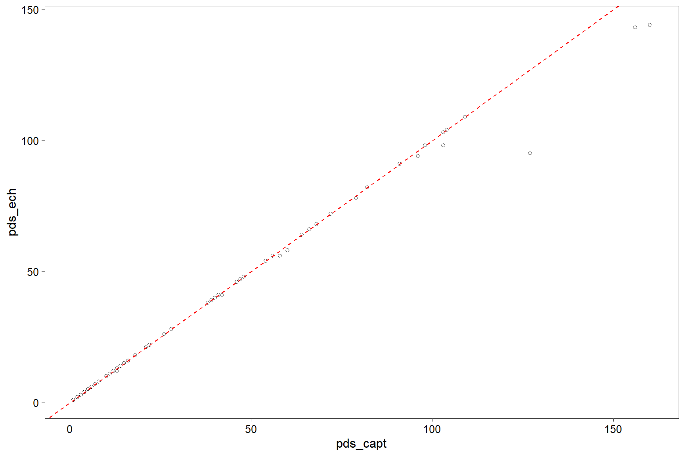
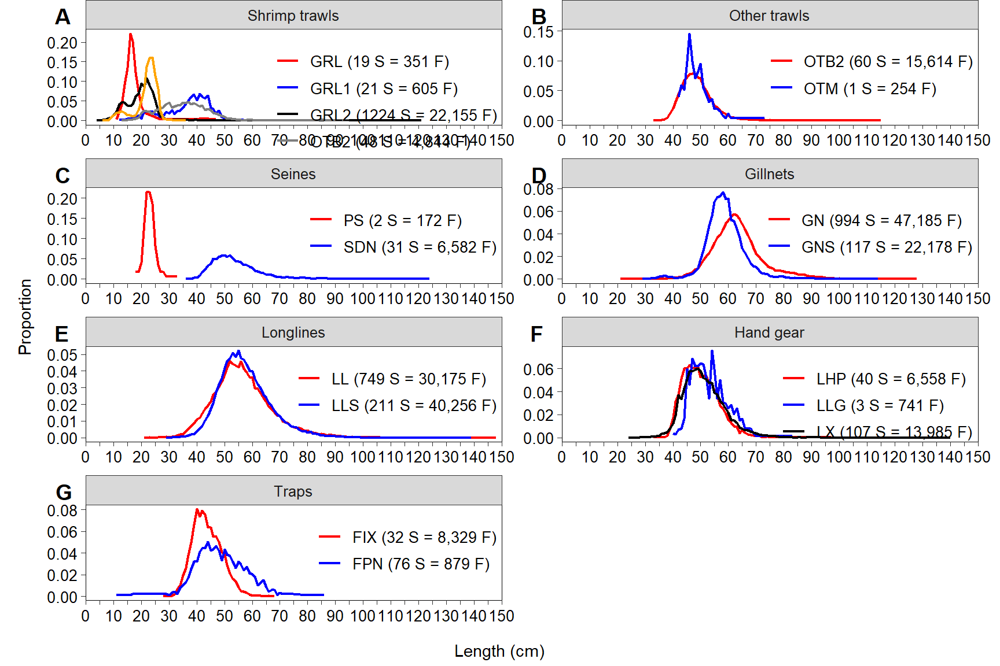

Préparation des intrants du programme
Jordan Ouellette-Plante
2021-09-30
1 Objectif
Préparer ou du moins copier localement les intrants requis pour les analyses.
2 Initialisation
2.1 Répertoires et infos utiles
2.2 packages requis
Des packages supplémentaires sont requis.
3 Débarquements
3.1 Données ZIFF
if(!file.exists(dat_ziff)){ # si le fichier n'existe pas, je le crée
load(intrant_ziff)
dim(ziff) # 3799554 obs et 66 var
unique(ziff$cod_esp) # juste des débarquements de morue
unique(ziff$div) # plusieurs OPANO
ziff <- ziff %>% filter(div %in% opanos)
dim(ziff) # 583305 obs et 66 var
save(ziff, file = dat_ziff)
}else{
load(dat_ziff)
}
dim(ziff) # 583305 obs et 66 var
## [1] 583305 663.2 Données OPANO
3.2.1 Format NAFO 21A
3.2.2 Format NAFO 21B
if(!file.exists(dat_nafob)){
load(intrant_nafob)
dim(nafoB) # 164393 obs et 25 var
unique(nafoB$nafo) # plusieurs OPANO
unique(nafoB$code) # 101 = code OPANO pour la morue franche
nafoB <- nafoB %>%
filter(nafo %in% toupper(opanos)) %>%
select(year, month, country, nafo, gear, gear, gear.code, gear.cat, prov, catch)
names(nafoB) <- recode(names(nafoB), "year" = "annee", "month" = "mois", "country" = "pays", "nafo" = "opano",
"gear" = "engin_en", "gear.code" = "engin", "gear.cat" = "engin_cat")
unique(nafoB$opano) # je vais standardiser 3Pn
nafoB[nafoB$opano == "3PN", "opano"] <- "3Pn"
dim(nafoB) # 19059 obs et 9 var
save(nafoB, file = dat_nafob)
}else{
load(dat_nafob)
}
dim(nafoB) # 19059 obs et 9 var
## [1] 19059 93.3 Comparaison des débarquements
dat_a <- nafoA %>%
group_by(annee) %>%
summarise(catch = sum(catch)) %>%
ungroup %>%
mutate(source = "NAFO 21A")
dat_b <- nafoB %>%
group_by(annee) %>%
summarise(catch = sum(catch)) %>%
ungroup %>%
mutate(source = "NAFO 21B")
dat_c <- ziff %>%
group_by(annee) %>%
summarise(catch = sum(pds_vift, na.rm = T)) %>% # en tonnes
ungroup %>%
mutate(source = "ZIFF")
dat <- bind_rows(dat_a, dat_b, dat_c) %>% filter(annee >= 1985)
brks_x <- 1985:2020
labs_x <- brks_x
labs_x[labs_x %% 5 > 0] <- ""
ggplot(data = dat, aes(x = annee, y = catch / 1000, fill = source)) +
geom_bar(stat = "identity", position = "dodge", color = "black", size = 0.2) +
scale_x_continuous(expand = c(0, 0), breaks = brks_x, labels = labs_x) +
labs(x = "Année", y = "Débarquements (milliers de tonnes)", fill = "Source des données") +
theme(legend.position = c(1,1),
legend.justification = c(1,1))
Les données de l’OPANO donnent des résultats équivalents jusqu’à ~ 2009. Les données NAFO 21B sont disponibles jusqu’à 2016, mais on voit qu’elles ne sont pas à jour avec les données ZIFF.
Les données ZIFF ne comportent pas les débarquements des flottilles étrangères et c’est pour cette raison qu’ils sont plus bas au cours des années 1985–1992.
3.4 catch = nafoB + ziff
Je me crée un jeu catch où je combine les données NAFO 21B et ZIFF selon ce format:
- 1960–1984: données NAFO 21B
- 1985–2020:
- Données ZIFF
- Données NAFO 21B seulement pour la composante internationale des débarquements
ziff <- ziff %>%
mutate(source = "ZIFF",
pays = "Canada", # pour être constant avec les variables de nafoB
prov = ifelse(prov_deb == "Inconnu", as.character(prov_att), as.character(prov_deb)),
engin = as.character(engin),
catch = pds_vif) # débarquements en kg
nafoB <- nafoB %>%
mutate(source = "NAFO 21B",
engin = as.character(engin),
an_gestion = as.character(annee),
catch = catch * 1000) # débarquements en kg
nafoB %>% filter(pays != "Canada") %>% pull(annee) %>% unique %>% sort
## [1] 1960 1961 1962 1963 1964 1965 1966 1967 1968 1969 1970 1971 1972 1973 1974
## [16] 1975 1976 1977 1978 1979 1980 1981 1982 1983 1984 1985 1986 1987 1989 1990
## [31] 1991 1992
# j'ai des débarquements de flotilles étrangères passé 1985. ZIFF ne contiendra pas ces débarquements
catch <- bind_rows(nafoB %>% filter(annee < 1985),
nafoB %>% filter(annee >= 1985, pays != "Canada"),
ziff) %>%
select(annee, mois, div, opano, prov, engin, engin_cat, engin_fr, engin_en, source,
catch, pays, date_deb, an_gestion)
# catch %>%
# group_by(annee) %>%
# summarise(catch = sum(catch / 1000, na.rm = T)) %>% # débarquements en tonnes
# ggplot(data = ., aes(x = annee, y = catch)) +
# geom_line() +
# geom_point()
unique(catch$div) # valeurs NA...
## [1] NA "4R" "4S" "3Pn"
cor <- which(with(catch, is.na(div))); length(cor) # 10156 lignes
## [1] 10156
unique(catch$opano[cor]) # la division n'a pas été inscrite.
## [1] "4R" "3Pn" "4S"
catch$div[cor] <- catch$opano[cor]
cor <- which(with(catch, opano == "3P")); length(cor) # 17445 lignes
## [1] 17445
unique(catch$div[cor]) # la zone unitaire devrait être 3Pn
## [1] "3Pn"
catch$opano[cor] <- "3Pn"
cor <- which(with(catch, nchar(opano) == 2)); length(cor) # 7872 lignes
## [1] 7872
unique(catch$div[cor]) # on ne sait pas quelle est la zone unitaire exacte...
## [1] "4R" "4S"
rm(cor)
dim(catch) # 593461 obs et 14 var
## [1] 593461 14
save(catch, file = dat_catch)4 Échantillonneurs à quai
4.1 Lectures
4.1.1 FL
lf = length frequency = données de fréquences de longueur
lf <- read.lf(file = intrant_lf, year = NULL, language = "fr") %>%
filter(grepl("3PN|4R|4S", opano)) %>%
as_tibble
names(lf) <- recode(names(lf), "nafo" = "div")
# Travail sur opano et div
unique(lf$div) # problème avec 3P
## [1] "3P" "4R" "4S" NA
cor <- which(with(lf, !is.na(div) & div == "3P")); length(cor) # 14667 lignes
## [1] 14667
unique(lf$opano[cor]) # 3Pn
## [1] "3PN"
lf$div[cor] <- "3Pn"
cor <- which(with(lf, is.na(div))); length(cor) # 13737 lignes
## [1] 13737
unique(lf$opano[cor]) # div devrait être 4S
## [1] "4SI" "4SX" "4SY"
lf$div[cor] <- "4S"
rm(cor)
unique(lf$opano) # la 3e lettre devrait être en minuscule
## [1] "3PN" "4R" "4RA" "4RB" "4RC" "4RD" "4S" "4SI" "4SS" "4SV" "4SW" "4SX"
## [13] "4SY" "4SZ"
lf$opano <- paste0(substr(lf$opano,1,2), tolower(substr(lf$opano,3,3)))
dim(lf) # 109138 obs et 34 var
## [1] 109138 344.1.2 Caractéristiques biologiques
Ces données incluent les âges.
bio <- read.bio(file = intrant_bio, year = NULL, species = my_sp, language = "fr") %>%
filter(grepl("3PN|4R|4S", opano)) %>%
mutate_at(.vars = c("engin", "engin_fr", "engin_en"), .funs = as.character) %>%
as_tibble
# Travail sur opano et div
bio$opano <- as.character(bio$opano) # pour enlever les niveaux inutilisés
unique(bio$opano) # la 3e lettre devrait être en minuscule
## [1] "4RB" "3PN" "4RC" "4SI" "4SV" "4SS" "4SY" "4S" "4SX" "4RA" "4RD" "4R"
## [13] "4SW" "4SZ"
bio$opano <- paste0(substr(bio$opano,1,2), tolower(substr(bio$opano,3,3)))
dim(bio) # 117002 obs et 24 var
## [1] 117002 24
temp <- bio # pour la partie sur les échantillons manquants
bio <- bio %>% filter(!is.na(age), !is.na(longueur))
dim(bio) # 85185 obs et 24 var
## [1] 85185 244.2 Échantillons manquants
Pour certaines années (1994–1997), on voit que j’ai plus d’échantillons d’âge que d’échantillons de FL, ce qui est bizarre puisque normalement, l’échantillon d’âge est un sous-échantillon de celui de FL.
Une théorie est que des échantillons auraient été envoyés complets à l’IML ou ailleurs. Là-bas, les spécimens auraient tous servis autant pour les lectures d’âge que pour les FL. Il aurait donc dû copier ces données dans les données LF et Âge, et pas seulement dans les données d’âge.
a <- lf %>% filter(annee %in% my_year) %>% group_by(annee) %>% summarise(n_lf = n_distinct(ech_id)) %>% ungroup
b <- temp %>% filter(annee %in% my_year) %>% group_by(annee) %>% summarise(n_age = n_distinct(ech_id)) %>% ungroup
full_join(a, b, by = "annee") %>% filter(n_age > n_lf)
## # A tibble: 4 x 3
## annee n_lf n_age
## <dbl> <int> <int>
## 1 1994 6 78
## 2 1995 6 778
## 3 1996 11 418
## 4 1997 156 321
manque <- setdiff(temp %>% filter(annee %in% my_year) %>% pull(ech_id) %>% unique,
lf %>% filter(annee %in% my_year) %>% pull(ech_id) %>% unique)
length(manque) # manque 1478 échantillons pour les années 1993:2020
## [1] 1478
temp %>%
filter(annee %in% my_year, ech_id %in% manque) %>%
group_by(annee) %>%
summarise(n_tot = NROW(annee),
n_lu = NROW(annee[!is.na(age)]),
n_non_lu = n_tot - n_lu) %>%
ungroup %>%
arrange(desc(n_non_lu))
## # A tibble: 4 x 4
## annee n_tot n_lu n_non_lu
## <int> <int> <int> <int>
## 1 1995 9667 2738 6929
## 2 1996 6359 1425 4934
## 3 1997 3568 1114 2454
## 4 1994 764 733 31
# Pour ces échantillons, des milliers de spécimens n'ont pas eu leur otolithe lue
temp %>% filter(ech_id %in% manque) %>% group_by(annee) %>% summarise(n = n_distinct(ech_id)) %>% ungroup
## # A tibble: 4 x 2
## annee n
## <int> <int>
## 1 1994 72
## 2 1995 772
## 3 1996 407
## 4 1997 227
# Les années 1994 à 1997 sont problématiques.
temp %>% filter(ech_id %in% manque) %>% group_by(engin) %>% summarise(n = n_distinct(ech_id)) %>% ungroup
## # A tibble: 4 x 2
## engin n
## <chr> <int>
## 1 FPN 76
## 2 GN 754
## 3 LHP 5
## 4 LL 643
# Surtout du filet maillant et de la palangre. J'ai l'impression que ce sont des échantillons provenant de PSfixe, puisque les autres engins étaient également utilisés au début de ce programme.
vars <- intersect(names(lf), names(temp))
max_id <- max(lf$id)
ajout_lf <- temp %>%
filter(ech_id %in% manque) %>%
select_at(all_of(vars)) %>%
mutate(div = ifelse(opano == "3Pn", "3Pn", substr(opano, 1,2)),
n_mes = 1, # dans bio, une ligne par poisson
etat_deb = "Inconnu", # information non-fournie dans bio
esp_ech = 10, # dans bio, une ligne par poisson
pds_deb = NA, # dans bio, une ligne par poisson
pds_ech = NA, # dans bio, une ligne par poisson
no_voy = as.character(no_voy), # pour que le merge fonctionne
no_prov = as.character(no_prov), # pour que le merge fonctionne
nbpc = as.character(nbpc)) # pour que le merge fonctionne
ids <- ajout_lf %>% group_by(annee, ech_id) %>% summarise %>% ungroup %>% mutate(id = 1:nrow(.) + max_id)
ajout_lf <- left_join(ajout_lf, ids, by = c("annee", "ech_id"))
dim(ajout_lf) # 20358 obs et 24 var
## [1] 20358 24
dim(lf) # 109138 obs et 34 var
## [1] 109138 34
lf <- bind_rows(lf, ajout_lf)
dim(lf) # 129496 obs et 34 var
## [1] 129496 34
rm(a,b,manque, ajout_lf, vars, temp, ids)4.3 Validation des longueurs
Je m’assure que les longueurs font du sens. Je ne regarde que les petites valeurs.
lf %>% group_by(longueur) %>% count %>% ungroup # le 7 cm est à part du reste...
## # A tibble: 138 x 2
## longueur n
## <dbl> <int>
## 1 7 1
## 2 11 1
## 3 12 1
## 4 13 1
## 5 14 2
## 6 16 2
## 7 17 2
## 8 18 3
## 9 19 12
## 10 20 4
## # ... with 128 more rows
lf %>% filter(longueur < 19) %>% select(annee, engin, longueur, ech_id) # Une morue de 7 cm pêchée à la palangre? Invraisemblable.
## # A tibble: 13 x 4
## annee engin longueur ech_id
## <dbl> <chr> <dbl> <dbl>
## 1 1983 LLS 14 41518
## 2 1995 PS 18 1238
## 3 2014 LLS 7 56209
## 4 1983 ST 16 41393
## 5 1995 FPN 16 3568
## 6 1995 FPN 13 3568
## 7 1995 FPN 12 3568
## 8 1995 FPN 18 3568
## 9 1995 FPN 11 3567
## 10 1995 FPN 17 3568
## 11 1995 FPN 18 3567
## 12 1995 FPN 14 3567
## 13 1995 FPN 17 3567
lf %>% filter(ech_id == 56209) %>% ggplot(data = ., aes(x = longueur)) + geom_histogram(binwidth = 1)4.4 Validation des âges
Je m’assure que les âges font du sens.
bio %>% group_by(age) %>% count %>% as.data.frame() # pas de valeurs absurdes à 1ère vue. 1 seule valeur 1 an
## age n
## 1 1 1
## 2 2 55
## 3 3 798
## 4 4 5428
## 5 5 10340
## 6 6 13425
## 7 7 14278
## 8 8 13580
## 9 9 11042
## 10 10 6767
## 11 11 4482
## 12 12 2296
## 13 13 1281
## 14 14 592
## 15 15 348
## 16 16 205
## 17 17 112
## 18 18 61
## 19 19 25
## 20 20 28
## 21 21 19
## 22 22 7
## 23 23 10
## 24 24 4
## 25 26 1
# Relation âge-longueur
bio <- bio %>% group_by(age) %>% mutate(outlier = outlier(longueur, coef = 3)) %>% ungroup
# Les valeurs étant au-dessus du 75e percentile ou en-dessous du 25e percentile par un facteur de 3 fois l'étendue interquartile
# sont jugées êtres des outliers.
bio %>% filter(outlier == T) %>% select(annee, longueur, age, outlier) # 24 outliers initialement
## # A tibble: 24 x 4
## annee longueur age outlier
## <int> <int> <int> <lgl>
## 1 1984 62 4 TRUE
## 2 1983 66 4 TRUE
## 3 1983 89 6 TRUE
## 4 1983 64 4 TRUE
## 5 1984 76 4 TRUE
## 6 2016 74 5 TRUE
## 7 1984 60 4 TRUE
## 8 1990 92 6 TRUE
## 9 1990 99 7 TRUE
## 10 1984 112 8 TRUE
## # ... with 14 more rows
ggplot(data = bio %>% filter(annee %in% my_year), aes(x = longueur, fill = outlier)) +
geom_histogram() +
facet_wrap(~ age, scale = "free")
# bizarre pour l'âge 1
bio %>% filter(age == 1) %>% select(annee, longueur, age) # Lui aussi est un outlier. Impossible d'avoir 1 an/60 cm de long
## # A tibble: 1 x 3
## annee longueur age
## <int> <int> <int>
## 1 1997 60 1
bio[bio$age == 1, "outlier"] <- T
# Pour les vieilles morues, beaucoup de variabilité. Je pense que c'est possible
if (langue == "fr"){
lab1 <- "Âge"
lab2 <- "Longueur (cm)"
lab3 <- "Valeur aberrante"
} else {
lab1 <- "Age"
lab2 <- "Length (cm)"
lab3 <- "Outlier"
}
# Pour la figure, je n'utilise que les données de 1993--2020.
dim(bio) # 85185 obs et 25 var
## [1] 85185 25
temp <- bio %>% filter(annee %in% my_year)
dim(temp) # 27386 obs et 25 var
## [1] 27386 25
temp$outlier <- as.character(temp$outlier)
temp[temp$outlier == "TRUE", "outlier"] <- lab3
range(temp$longueur)
## [1] 18 148
brks_y <- seq(from = 10, to = 150, by = 10)
labs_y <- brks_y
labs_y[labs_y %% 25 > 0] <- ""
brks_x <- min(temp$age):max(temp$age)
labs_x <- brks_x
# Nbre de morues âgées
nb <- temp %>% group_by(age) %>% count %>% ungroup %>% mutate(lab = format(n, big.mark = bm, trim = T))
graph1 <- ggplot(data = temp, aes(x = age, y = longueur, group = age)) +
geom_boxplot() +
geom_point(data = temp %>% filter(outlier == lab3), aes(color = outlier)) +
labs(x = lab1, y = lab2, color = NULL) +
scale_color_manual(values = "red") +
theme(legend.position = c(0,1),
legend.justification = c(0,1)) +
scale_y_continuous(breaks = brks_y, labels = labs_y) +
scale_x_continuous(breaks = brks_x, labels = labs_x, expand = c(0,0)) +
geom_text(data = nb, aes(x = age, y = -Inf, label = lab, vjust = -0.9))
graph15 Observateurs en mer
J’ai des débarquements de morues occasionnés par des crevettiers, mais je n’ai pas de données d’échantillonneurs à quai où des morues ont été mesurées pour cet engin. Je dois donc faire appel aux données d’observateurs en mer.
catch %>%
filter(annee %in% my_year, engin_fr == "Chalut à crevettes") %>%
group_by(annee) %>% summarise(deb = sum(catch, na.rm = T)) %>%
ungroup
## # A tibble: 28 x 2
## annee deb
## <dbl> <dbl>
## 1 1993 83350
## 2 1994 4968
## 3 1995 169
## 4 1996 38
## 5 1997 1142
## 6 1998 30
## 7 1999 88
## 8 2000 55
## 9 2001 10
## 10 2002 10
## # ... with 18 more rowsJ’ai des débarquements à partir de 1993. Selon Savard et al. (2013), la grille séparatrice aurait été obligatoire à l’hiver 1993. Je ne peux donc pas regrouper le chalut à crevette avec les autres chaluts de fond, puisqu’on assume que les morues débarquées seront beaucoup plus petites.
setdiff(lf %>% filter(annee %in% my_year, outlier == F) %>% pull(engin) %>% unique,
bio %>% filter(annee %in% my_year, outlier == F) %>% pull(engin) %>% unique)
## character(0)
# tous les engins de lf sont dans bio
bio %>% filter(annee %in% my_year, outlier == F) %>% pull(engin_fr) %>% unique
## [1] "Filets maillants calés (ancrés)"
## [2] "Palangres calées"
## [3] "Filets maillants (non spécifiés)"
## [4] "Palangres (non spécifiées)"
## [5] "Palangrotte"
## [6] "Filets-pièges fixes non couverts"
## [7] "Hameçons et lignes (non spécifiés)"
## [8] "Chalut de fond à panneaux (arrière)"
## [9] "Pièges (non spécifiés)"
## [10] "Danois/Ecossais/seine Pairée (2 navires)"
## [11] "Lignes à main et lignes à cannes (manoeuvrées à la main)"
## [12] "Seine bourse"
## [13] "Chalut pélagique"Je n’ai aucun débarquement de morues par des chaluttiers à crevette dans les données d’échantillonneurs à quai. Je vais devoir avoir recours aux données des observateurs en mer.
load(dat_obs_1990_1998); dim(JOP1) # 22550 obs et 44 var. Données fournies par Hugues Benoît via courriel le 9 sept. 2021
## [1] 22550 44
# représente les FL des morues capturées par des chaluts à crevette. La période 1990-1998 n'est actuellement pas disponible via la base de données et c'est pourquoi Hugues me fournit une copie qu'il avait sur son ordi personnel.
unique(JOP1$spec) # juste de la morue
## [1] 10
unique(JOP1$mspec) # visait la crevette nordique
## [1] 2210
names(JOP1) <- recode(names(JOP1), "act_no" = "no_voy", "sub_acti" = "id", "uarea" = "opano",
"fish_len" = "longueur", "no_fish" = "n_mes", "wt_samp" = "pds_ech", "act_date" = "date")
JOP1 %>% distinct(no_voy, id, cfvn) %>% nrow # 854 activités de pêche unique
## [1] 854
JOP1 %>% distinct(capt_no) %>% nrow # 854 activités de pêche unique. capt_no identifie chaque activité de pêche
## [1] 854
JOP1 %>%
group_by(capt_no) %>%
summarise_at(.vars = c("pds_ech", "wt_kept", "wt_dscrd"), .funs = n_distinct) %>%
ungroup %>%
summary # problème avec les pds_ech...
## capt_no pds_ech wt_kept wt_dscrd
## Min. : 152 Min. :1.000 Min. :1 Min. :1
## 1st Qu.: 31151 1st Qu.:1.000 1st Qu.:1 1st Qu.:1
## Median : 43600 Median :1.000 Median :1 Median :1
## Mean : 433040 Mean :1.107 Mean :1 Mean :1
## 3rd Qu.: 367653 3rd Qu.:1.000 3rd Qu.:1 3rd Qu.:1
## Max. :2047813 Max. :3.000 Max. :1 Max. :1
# Pour une même activité, il semble que parfois, des échantillons aient été pris peut-être à différents moments durant la remontée
# de la capture à bord (ex: début, fin)
# Je vais combiner les lignes
JOP1 %>%
group_by(capt_no) %>%
summarise(n = n_distinct(pds_ech)) %>%
ungroup %>%
filter(n > 1) %>%
pull(capt_no) %>%
unique %>%
length
## [1] 69
# 69 activités de la sorte
# Je vais régler cette problématique. J'en profite pour ne conserver que les variables qui m'intéressent.
library(lubridate)
a <- JOP1 %>%
group_by(capt_no) %>%
summarise(pds_ech = sum(unique(pds_ech), na.rm = T),
opano = unique(opano),
wt_kept = unique(wt_kept),
wt_dscrd = unique(wt_dscrd),
pds_capt = wt_kept + wt_dscrd,
date = ymd(unique(date)),
annee = year(date)) %>%
ungroup
dim(a) # 854 obs et 8 var
## [1] 854 8
b <- JOP1 %>%
group_by(capt_no, longueur) %>%
summarise(n_mes = sum(n_mes)) %>%
ungroup
dim(b) # 18744 obs et 3 var = moins de lignes que JOP1, car multiples échantillons par capt_no combinés.
## [1] 18744 3
ajout_lf <- full_join(a, b, by = "capt_no"); dim(ajout_lf) # 18744 obs et 10 var
## [1] 18744 10
ajout_lf
## # A tibble: 18,744 x 10
## capt_no pds_ech opano wt_kept wt_dscrd pds_capt date annee longueur
## <dbl> <dbl> <chr> <dbl> <dbl> <dbl> <date> <dbl> <dbl>
## 1 152 1.5 4Si 35 75 110 1991-04-19 1991 18
## 2 152 1.5 4Si 35 75 110 1991-04-19 1991 19
## 3 152 1.5 4Si 35 75 110 1991-04-19 1991 20
## 4 152 1.5 4Si 35 75 110 1991-04-19 1991 21
## 5 152 1.5 4Si 35 75 110 1991-04-19 1991 22
## 6 152 1.5 4Si 35 75 110 1991-04-19 1991 23
## 7 152 1.5 4Si 35 75 110 1991-04-19 1991 24
## 8 152 1.5 4Si 35 75 110 1991-04-19 1991 25
## 9 152 1.5 4Si 35 75 110 1991-04-19 1991 26
## 10 152 1.5 4Si 35 75 110 1991-04-19 1991 27
## # ... with 18,734 more rows, and 1 more variable: n_mes <dbl>
rm(a,b)
cor <- which(with(ajout_lf, pds_ech > pds_capt)); length(cor) # 1466 lignes
## [1] 1466
ids <- ajout_lf[cor, ] %>% distinct(capt_no) %>% pull(capt_no) %>% unique
length(ids)
## [1] 41
# Je n'utiliserai pas ces activités (41), puisque le poids de l'échantillon ne peut être > que celui de capture
table(ajout_lf$annee, useNA = "always")
##
## 1990 1991 1992 1993 1994 1996 1997 1998 <NA>
## 935 2695 13413 843 196 13 366 283 0
dim(ajout_lf) # 18744 obs et 10 var
## [1] 18744 10
ajout_lf <- ajout_lf %>%
filter(!(capt_no %in% ids)) %>%
filter(annee %in% my_year) # je ne garde que les donneées dans les années d'intérêt
dim(ajout_lf) # 1701 obs et 10 var. On perd bcp de lignes (le gros des données était de 1990:1992)
## [1] 1701 10
ajout_lf %>%
group_by(capt_no) %>%
summarise_at(.vars = c("pds_ech", "pds_capt"), .funs = unique) %>%
ungroup %>%
ggplot(data = ., aes(x = pds_capt, y = pds_ech)) +
geom_point(shape = 21, alpha = 0.7) +
geom_abline(intercept = 0, slope = 1, color = "red", linetype = 2)
# La majeure partie du temps, toute la capture est échantillonnée
range(ajout_lf$date) # du 18 avril 1993 au 3 sept 1998
## [1] "1993-04-18" "1998-09-03"
unique(ajout_lf$longueur) # au cm près = parfait
## [1] 13 15 17 18 19 20 21 22 23 24 25 26 27 28 29 30 31 32 33 34 35 36 37 38 39
## [26] 41 42 43 46 47 50 40 45 48 49 16 44 55 61 62 52 51 54 56 59 60 82 53 58 57
## [51] 63 65 14 10 11 12 64 84 85 86 87 88 89 90 91 92 93 94 95 66Maintenant avec les données post-1998.
load(dat_obs_1999); str(obs) # liste avec 2 jeux de données
## List of 2
## $ catch: tibble [440,207 x 26] (S3: tbl_df/tbl/data.frame)
## ..$ no_voy : chr [1:440207] "J16-0563" "A17-0081" "A17-0082" "J01-0081B" ...
## ..$ no_affec: chr [1:440207] "A" "A" "A" "A" ...
## ..$ no_sorti: chr [1:440207] "01" "01" "01" "01" ...
## ..$ trait : int [1:440207] 1 5 3 63 46 64 63 65 67 68 ...
## ..$ nbpc : int [1:440207] 3 4 4 7 7 7 9 9 9 9 ...
## ..$ engin : chr [1:440207] "OTB2" "OTB2" "OTB2" "OTB2" ...
## ..$ larg_eng: num [1:440207] NA NA NA NA NA NA NA NA NA NA ...
## ..$ div_nafo: chr [1:440207] "5Zj" "5Zj" "5Zj" "4Wl" ...
## ..$ zone : chr [1:440207] NA NA NA NA ...
## ..$ lat_deb : num [1:440207] 42.1 42.1 42.1 42.9 43.2 ...
## ..$ long_deb: num [1:440207] -67 -67 -67.1 -62.4 -61.4 ...
## ..$ quadril : chr [1:440207] NA NA NA NA ...
## ..$ lat_fin : num [1:440207] NA 42 42.1 43 43.1 ...
## ..$ long_fin: num [1:440207] NA -66.9 -66.9 -62.2 -61.5 ...
## ..$ prof : num [1:440207] 84 84 65 250 160 230 140 144 142 140 ...
## ..$ hr_deb : num [1:440207] 14.5 10.7 11 7 13.3 ...
## ..$ duree : num [1:440207] 3.25 4.18 4.38 1.5 4.67 ...
## ..$ vitesse : num [1:440207] 3.3 3.5 3.8 3.2 3.5 3.5 3 3 3 3 ...
## ..$ esp_vis : int [1:440207] 11 11 11 14 14 14 14 14 14 14 ...
## ..$ esp_capt: int [1:440207] 70 70 70 70 70 70 70 70 70 70 ...
## ..$ pdv_cons: num [1:440207] 0 0 0 1 3 2 5 6 5 10 ...
## ..$ pdv_rej : num [1:440207] 4 3 1 0 0 0 0 0 0 0 ...
## ..$ cod_bris: int [1:440207] 1 1 1 1 6 1 6 1 1 1 ...
## ..$ l_trait : logi [1:440207] NA NA NA NA NA NA ...
## ..$ date : Date[1:440207], format: "2016-09-22" "2017-10-23" ...
## ..$ annee : num [1:440207] 2016 2017 2017 2001 2001 ...
## $ fl : tibble [674,668 x 16] (S3: tbl_df/tbl/data.frame)
## ..$ no_voy : chr [1:674668] "EC06Z1-62" "EC06Z1-62" "EC06Z1-66" "EC06Z1-66" ...
## ..$ no_affec: chr [1:674668] "A" "A" "A" "A" ...
## ..$ no_sorti: chr [1:674668] "01" "01" "01" "01" ...
## ..$ trait : int [1:674668] 40 45 8 20 20 20 20 13 64 64 ...
## ..$ espece : int [1:674668] 70 70 70 70 70 70 70 70 70 70 ...
## ..$ pds_capt: num [1:674668] 1 1 1 1 1 1 1 1 1 1 ...
## ..$ pds_ech : num [1:674668] 1 1 1 1 1 1 1 1 1 1 ...
## ..$ grp_mes : int [1:674668] 1 1 1 1 1 1 1 1 1 1 ...
## ..$ typ_mes : int [1:674668] NA NA NA NA NA NA NA NA NA NA ...
## ..$ sexe : chr [1:674668] "M" "I" "M" "I" ...
## ..$ longueur: num [1:674668] 34 79 34 24 29 30 34 20 33 37 ...
## ..$ nb_pois : int [1:674668] 1 1 1 1 1 1 1 1 1 1 ...
## ..$ taille : num [1:674668] NA NA NA NA NA NA NA NA NA NA ...
## ..$ nb_vif : int [1:674668] NA NA NA NA NA NA NA NA NA NA ...
## ..$ nb_mort : int [1:674668] NA NA NA NA NA NA NA NA NA NA ...
## ..$ test : chr [1:674668] "test" "test" "test" "test" ...
# Données de captures
a <- obs$catch %>%
mutate(opano = div_nafo,
pds_capt = pdv_cons + pdv_rej) %>%
filter(esp_vis == 2211, esp_capt == 10) %>% # visant la crevette nordique et ayant débarqué de la morue franche
select(no_voy, no_affec, no_sorti, trait, opano, date, annee, pds_capt)
dim(a) # 5522 obs et 8 var
## [1] 5522 8
a %>% distinct(no_voy, no_affec, no_sorti, trait) %>% nrow # ok. 1 ligne par trait de pêche
## [1] 5522
# no_voy, no_affec, no_sorti, trait sont les variables à utiliser pour la clé pour identifier une activité de pêche.
range(a$date) # du 2 avril 1999 au 19 sept 2020
## [1] "1999-04-02" "2020-09-19"
# Données de LF
b <- obs$fl %>%
filter(espece == 10) %>% # juste la morue
mutate(longueur = round(longueur, 0)) %>% # pour avoir des valeurs au cm près
group_by(no_voy, no_affec, no_sorti, trait, longueur) %>%
summarise(n_mes = sum(nb_pois)) %>%
ungroup
dim(b) # 142199 obs et 6 var
## [1] 142199 6
d <- obs$fl %>%
filter(espece == 10) %>%
group_by(no_voy, no_affec, no_sorti, trait) %>%
summarise(pds_ech = sum(unique(pds_ech))) %>% # peut y avoir plus d'un échantillon par activité de pêche (ex: début/fin)
ungroup
dim(d) # 8738 obs et 6 var
## [1] 8738 5
obs$fl %>% filter(espece == 10) %>% distinct(no_voy, no_affec, no_sorti, trait) %>% nrow # 8738
## [1] 8738
b <- full_join(b, d, by = c("no_voy", "no_affec", "no_sorti", "trait"))
dim(b) # 142199 obs et 7 var
## [1] 142199 7
# Combinaison
dim(b) # 142199 obs et 7 var
## [1] 142199 7
ajout_lf2 <- left_join(b, a, by = c("no_voy", "no_affec", "no_sorti", "trait")) %>%
filter(!is.na(date)) # les lignes où date est NA sont des lignes où l'appariement n'a pas fonctionné
dim(ajout_lf2) # 8110 obs et 11 var
## [1] 8110 11
rm(a,b,d)
range(ajout_lf2$date) # du 2 avril 1999 au 19 sept 2020
## [1] "1999-04-02" "2020-09-19"
ajout_lf2 %>%
group_by(no_voy, no_affec, no_sorti, trait) %>%
summarise_at(.vars = c("pds_ech", "pds_capt"), .funs = unique) %>%
ungroup %>%
ggplot(data = ., aes(x = pds_capt, y = pds_ech)) +
geom_point(shape = 21, alpha = 0.7) +
geom_abline(intercept = 0, slope = 1, color = "red", linetype = 2) Pour chaque activité de pêche, je vais leur assigner un id unique (ech_id).
Pour chaque activité de pêche, je vais leur assigner un id unique (ech_id).
val_max <- max(lf$ech_id); val_max # 65965
## [1] 65965
# Données 1990-1998
cle <- "capt_no"
echs <- ajout_lf %>% distinct_at(cle) %>% mutate(ech_id = 1:nrow(.)) %>% mutate(ech_id = ech_id + val_max)
dim(ajout_lf) # 1701 obs et 10 var
## [1] 1701 10
ajout_lf <- left_join(ajout_lf, echs, by = cle)
dim(ajout_lf) # 1701 obs et 11 var
## [1] 1701 11
# Données 1999-maintenant
val_max <- max(ajout_lf$ech_id); val_max # 66116
## [1] 66116
cle <- c("no_voy", "no_affec", "no_sorti", "trait")
echs <- ajout_lf2 %>% distinct_at(cle) %>% mutate(ech_id = 1:nrow(.)) %>% mutate(ech_id = ech_id + val_max)
dim(ajout_lf2) # 8110 obs et 11 var
## [1] 8110 11
ajout_lf2 <- left_join(ajout_lf2, echs, by = cle)
dim(ajout_lf2) # 8110 obs et 12 var
## [1] 8110 12
rm(echs, cle, val_max)Combinaison
ajout_lf <- bind_rows(ajout_lf, ajout_lf2) %>%
mutate(engin = "ST",
engin_fr = "Chalut à crevette",
engin_en = "Shrimp trawl",
source = "observateur", # pour laisser une trace de la provenance de ces données
mois = month(date)) %>%
filter(grepl("3Pn|4R|4S", opano)) %>% # juste les données de 3Pn4RS désirées
select(ech_id, annee, opano, mois, date, engin, engin_fr, engin_en, source, longueur, n_mes, pds_ech)
dim(ajout_lf) # 7640 obs et 12 var
## [1] 7640 12
n_distinct(ajout_lf$ech_id) # 1546 échantillons
## [1] 1546Vérification des outliers de longueur.
ajout_lf %>% group_by(longueur) %>% count %>% ungroup # ok
## # A tibble: 78 x 2
## longueur n
## <dbl> <int>
## 1 4 2
## 2 5 1
## 3 6 6
## 4 7 6
## 5 8 27
## 6 9 57
## 7 10 118
## 8 11 160
## 9 12 186
## 10 13 224
## # ... with 68 more rows
test <- ajout_lf
range(ajout_lf$longueur)
## [1] 4 121
bin <- 5
brks <- seq(from = 0, to = 125, by = bin); brks
## [1] 0 5 10 15 20 25 30 35 40 45 50 55 60 65 70 75 80 85 90
## [20] 95 100 105 110 115 120 125
test$cl <- NA # vide initialement
for (i in brks){
cor <- which(with(test, longueur >= i & longueur < (i + bin)))
test$cl[cor] <- i + (bin / 2) # pour être au milieu de la bin
rm(cor)
}
test %>%
group_by(cl) %>%
summarise(n_mes = sum(n_mes)) %>%
ungroup %>%
ggplot(data = ., aes(x = cl, y = n_mes)) +
geom_line()
Je peux maintenant ajouter à lf ces 2 jeux de données.
6 Relevé multispécifique du nGSL
Bien que les observateurs en mer récoltent des otolithes, je n’ai pas de données d’âge associées à ce programme pour utiliser dans les analyses. Après discussion avec Hugues, on en est venu à la conclusion qu’il était approprié d’utiliser les données d’âge du relevé multispécifique du nGSL.
load(intrant_ngsl) # ouvre ngsl
# Je vais prendre toutes les morues disponibles, en autant que des valeurs d'âge/longueur sont présentes
dat <- ngsl$carbio %>%
filter(!is.na(age), !is.na(longueur)) %>%
mutate(longueur = round(longueur/10, 0)) %>% # en cm, arrondi à l'entier
select(nav, rel, trait, longueur, age) %>%
left_join(., ngsl$set %>% select(nav, rel, trait, annee, opano), by = c("nav", "rel", "trait")) %>%
filter(annee %in% my_year, opano %in% opanos) %>% # juste 3Pn4RS
select(annee, longueur, age)
dim(dat) # 19915 obs et 3 var
## [1] 19915 3Pour chaque cellule de catch où l’engin est le chalut à crevettes, je vais me créer un échantillon bidon où j’utiliserai les données annuelles du relevé nGSL.
ajout_bio <- dat %>%
mutate(mois = 8, # le relevé nGSL est essentiellement au août
engin = "ST",
engin_fr = "Chalut à crevette",
engin_en = "Shrimp trawl",
source = "nGSL")
dim(ajout_bio) # 19915 obs et 8 var
## [1] 19915 8
val_max <- max(bio$ech_id); val_max # 65965
## [1] 65965
ids <- tibble(annee = my_year) %>% mutate(id = 1:nrow(.)) %>% mutate(ech_id = id + val_max)
dim(ajout_bio) # 19915 obs et 8 var
## [1] 19915 8
ajout_bio <- left_join(ajout_bio, ids %>% select(annee, ech_id), by = "annee")
dim(ajout_bio) # 19915 obs et 9 var
## [1] 19915 9
rm(val_max, ids, ngsl, dat)Je valide ensuite les âges.
ajout_bio %>% group_by(age) %>% count %>% as.data.frame() # pas de valeurs absurdes à 1ère vue. 1 seule valeur 1 an
## age n
## 1 0 72
## 2 1 1516
## 3 2 3239
## 4 3 3616
## 5 4 3436
## 6 5 2497
## 7 6 2192
## 8 7 1527
## 9 8 887
## 10 9 500
## 11 10 253
## 12 11 103
## 13 12 51
## 14 13 18
## 15 14 5
## 16 15 1
## 17 16 2
# Relation âge-longueur
ajout_bio <- ajout_bio %>% group_by(age) %>% mutate(outlier = outlier(longueur, coef = 3)) %>% ungroup
# Les valeurs étant au-dessus du 75e percentile ou en-dessous du 25e percentile par un facteur de 3 fois l'étendue interquartile
# sont jugées êtres des outliers.
ajout_bio %>% filter(outlier == T) %>% select(annee, longueur, age, outlier) # 2 outliers initialement
## # A tibble: 2 x 4
## annee longueur age outlier
## <int> <dbl> <int> <lgl>
## 1 1995 104 10 TRUE
## 2 2016 94 8 TRUE
ggplot(data = ajout_bio %>% filter(annee %in% my_year), aes(x = longueur, fill = outlier)) +
geom_histogram() +
facet_wrap(~ age, scale = "free")
# Je vais supprimer ces 2 outliers
dim(ajout_bio) # 19915 obs et 10 var
## [1] 19915 10
ajout_bio <- ajout_bio %>% filter(outlier == F)
dim(ajout_bio) # 19913 obs et 10 var
## [1] 19913 10Je peux maintenant ajouter à bio ces données.
7 Classes d’engins
Je me base en partie sur les regroupements présentés par Fréchet et Gascon (1986).
7.1 des débarquements
setdiff(catch %>% filter(source == "NAFO 21B", annee %in% my_year) %>% pull(engin) %>% unique,
catch %>% filter(source == "ZIFF", annee %in% my_year) %>% pull(engin) %>% unique)
## character(0)
# NAFO 21B ne fournit aucun engin qui n'est pas mentionné dans les données ZIFF
engins_deb <- catch %>%
filter(source == "ZIFF", !is.na(engin), annee %in% my_year) %>%
distinct(engin, engin_fr, engin_en, engin_cat) %>%
mutate(engin_groupe = as.character(NA)) %>% # vide initialement
arrange(engin)
dim(engins_deb) # 21 obs et 5 var
## [1] 21 5
if (langue == "fr"){
grp <- c("Chalut à crevette", "Autres chaluts", "Seines", "Filets maillants", "Palangres", "Engins manuels", "Trappes",
"Autres / inconnus")
} else {
grp <- c("Shrimp trawl", "Other trawls", "Seines", "Gillnets", "Longlines", "Hand gear", "Traps", "Others / unknown")
}
engins_deb[engins_deb$engin %in% c(19), "engin_groupe"] <- grp[1]
engins_deb[engins_deb$engin %in% c(11:13, 15:16, 18), "engin_groupe"] <- grp[2]
engins_deb[engins_deb$engin %in% c(21:22), "engin_groupe"] <- grp[3]
engins_deb[engins_deb$engin %in% c(41), "engin_groupe"] <- grp[4]
engins_deb[engins_deb$engin %in% c(50:51), "engin_groupe"] <- grp[5]
engins_deb[engins_deb$engin %in% c(53,55,59), "engin_groupe"] <- grp[6]
engins_deb[engins_deb$engin %in% c(61,62,67,68), "engin_groupe"] <- grp[7]
engins_deb[engins_deb$engin %in% c(71,99), "engin_groupe"] <- grp[8]
table(engins_deb$engin_groupe, useNA = "always") # 0 valeur NA = parfait
##
## Gillnets Hand gear Longlines Other trawls
## 1 3 2 6
## Others / unknown Seines Shrimp trawl Traps
## 2 2 1 4
## <NA>
## 0
engins_deb$engin_groupe <- factor(engins_deb$engin_groupe, levels = grp, ordered = T)catch contient des valeurs NA pour certaines colonnes associées aux engins. Je vais corriger ça.
catch[, c("engin_cat", "engin_fr", "engin_en")] <- NULL
cor <- which(with(catch, is.na(engin))); length(cor) # 1681
## [1] 1681
catch$engin[cor] <- 99 # sera dans le groupe Autres / inconnus
dim(catch) # 593461 obs et 11 var
## [1] 593461 11
catch <- left_join(catch, engins_deb %>% select(engin, engin_fr, engin_en), by = "engin")
dim(catch) # 593461 obs et 13 var
## [1] 593461 13
save(catch, file = dat_catch)Je vais également rajouter de l’information sur l’importance de ces engins dans la pêche.
ajout_tot <- catch %>%
filter(annee %in% my_year, !is.na(catch)) %>%
group_by(engin) %>%
summarise(catch = sum(catch)) %>%
ungroup %>%
mutate(perc_tot = catch / sum(catch) * 100) %>%
select(-catch) # inutile
ajout_min_max <- catch %>%
filter(annee %in% my_year, !is.na(catch)) %>%
mutate(annee = factor(annee),
engin = factor(engin)) %>%
group_by(annee, engin, .drop = F) %>%
summarise(catch = sum(catch)) %>%
group_by(annee) %>%
mutate(perc = catch / sum(catch) * 100) %>%
group_by(engin) %>%
summarise(min = min(perc),
max = max(perc),
ans = NROW(engin[perc > 0])) %>%
ungroup
dim(engins_deb) # 21 obs et 5 var
## [1] 21 5
engins_deb <- left_join(engins_deb, ajout_tot, by = "engin") %>%
left_join(., ajout_min_max, by = "engin")
dim(engins_deb) # 21 obs et 9 var
## [1] 21 9
save(engins_deb, file = dat_engin_deb)
rm(ajout_tot, ajout_min_max)7.2 des observateurs à quai
setdiff(lf %>% filter(annee %in% my_year, outlier == F) %>% pull(engin) %>% unique,
bio %>% filter(annee %in% my_year, outlier == F) %>% pull(engin) %>% unique)
## character(0)
# tous les engins de lf sont dans bio, même ST qui provient des données du relevé nGSL
setdiff(bio %>% filter(annee %in% my_year, outlier == F) %>% pull(engin) %>% unique,
lf %>% filter(annee %in% my_year, outlier == F) %>% pull(engin) %>% unique)
## character(0)
# tous les engins de bio sont dans lf
engins_obs <- bio %>%
filter(annee %in% my_year, outlier == F) %>% # pour n'avoir que ceux observés de 1993 à 2020
distinct(engin, engin_fr, engin_en) %>%
mutate(engin_groupe = as.character(NA)) # vide initialement)
dim(engins_obs) # 14 obs et 4 var
## [1] 14 4
engins_obs # correction requise pour SDN
## # A tibble: 14 x 4
## engin engin_fr engin_en engin_groupe
## <chr> <chr> <chr> <chr>
## 1 GNS Filets maillants calés (ancrés) Set gillnets (anchored) <NA>
## 2 LLS Palangres calées Set longlines <NA>
## 3 GN Filets maillants (non spécifiés) Gillnets (not specified) <NA>
## 4 LL Palangres (non spécifiées) Longlines (not specifie~ <NA>
## 5 LLG Palangrotte Handline <NA>
## 6 FPN Filets-pièges fixes non couverts Stationary uncovered po~ <NA>
## 7 LX Hameçons et lignes (non spécifié~ Hooks and lines (not sp~ <NA>
## 8 OTB2 Chalut de fond à panneaux (arriè~ Stern otter trawls <NA>
## 9 FIX Pièges (non spécifiés) Traps (not specified) <NA>
## 10 SDN Danois/Ecossais/seine Pairée (2 ~ Danish/Scottish/Pair se~ <NA>
## 11 LHP Lignes à main et lignes à cannes~ Handlines and pole-line~ <NA>
## 12 PS Seine bourse Purse seine <NA>
## 13 OTM Chalut pélagique Midwater trawl <NA>
## 14 ST Chalut à crevette Shrimp trawl <NA>
cor <- which(with(engins_obs, engin == "SDN")); length(cor) # 1 ligne
## [1] 1
engins_obs$engin_fr[cor] <- "Seine danoise, écossaise, ou pairée (2 navires)"
engins_obs$engin_en[cor] <- "Danish, Scotish or paired (2 boats) seine"
cor <- which(with(engins_obs, engin %in% c("ST")))
length(cor) # 1 ligne
## [1] 1
engins_obs$engin_groupe[cor] <- grp[1]
cor <- which(with(engins_obs, engin %in% c("OTB2", "OTM")))
length(cor) # 2 lignes
## [1] 2
engins_obs$engin_groupe[cor] <- grp[2]
cor <- which(with(engins_obs, engin %in% c("SDN", "PS")))
length(cor) # 2 lignes
## [1] 2
engins_obs$engin_groupe[cor] <- grp[3]
cor <- which(with(engins_obs, engin %in% c("GN", "GNS")))
length(cor) # 2 lignes
## [1] 2
engins_obs$engin_groupe[cor] <- grp[4]
cor <- which(with(engins_obs, engin %in% c("LL", "LLS")))
length(cor) # 2 lignes
## [1] 2
engins_obs$engin_groupe[cor] <- grp[5]
cor <- which(with(engins_obs, engin %in% c("LHP", "LLG", "LX")))
length(cor) # 3 lignes
## [1] 3
engins_obs$engin_groupe[cor] <- grp[6]
cor <- which(with(engins_obs, engin %in% c("FPN", "FIX")))
length(cor) # 2 lignes
## [1] 2
engins_obs$engin_groupe[cor] <- grp[7]
cor <- which(with(engins_obs, is.na(engin_groupe)))
length(cor) # 0 ligne
## [1] 0
#engins_obs$engin_groupe[cor] <- grp[8] # autres engins ou inconnus. Non-utilisé ici.
table(engins_obs$engin_groupe, useNA = "always") # 0 valeur NA = parfait
##
## Gillnets Hand gear Longlines Other trawls Seines Shrimp trawl
## 2 3 2 2 2 1
## Traps <NA>
## 2 0
engins_obs$engin_groupe <- factor(engins_obs$engin_groupe, levels = grp[1:7], ordered = T)
save(engins_obs, file = dat_engin_obs)8 Tableaux résumés
8.1 FL
8.1.1 table1: état au débarquement
etat <- lf %>%
filter(annee %in% my_year, outlier == F, source == "quai") %>% # seulement les données à quai
distinct(id, .keep_all = T) %>% # 1 ligne par échantillon de FL
group_by(annee, etat_deb) %>%
count() %>%
ungroup %>%
mutate(etat_deb = gsub(" ", "_", etat_deb)) %>%
pivot_wider(names_from = "etat_deb", values_from = "n", values_fill = 0)
pese <- lf %>%
filter(annee %in% my_year, outlier == F, source == "quai") %>% # seulement les données à quai
distinct(id, .keep_all = T) %>% # 1 ligne par échantillon de FL
group_by(annee) %>%
summarise(n_total = n(),
nb_pds_ech = NROW(pds_ech[is.na(pds_ech)]),
perc_ech = (nb_pds_ech / n_total) * 100,
nb_pds_deb = NROW(pds_deb[is.na(pds_deb)]),
perc_deb = (nb_pds_deb / n_total) * 100) %>%
ungroup
table1 <- left_join(etat, pese, by = "annee")
tot <- table1 %>%
summarise(across(.cols = c(2:6, 8), .fns = sum)) %>%
mutate(annee = "Total")
tot <- left_join(tot, tot %>%
mutate(perc_ech = round(nb_pds_ech / n_total * 100, 1),
perc_deb = round(nb_pds_deb / n_total * 100, 1)) %>%
select(annee, perc_ech, perc_deb),
by = "annee")
table1 <- bind_rows(table1 %>% mutate(annee = as.character(annee)), tot)
dim(table1) # 29 obs et 9 var
## [1] 29 9
rm(etat, pese, tot)
if (langue == "fr"){
cap <- "Inventaire des échantillons de fréquence de longueur selon l’état au débarquement et l’année de prélèvement. Le nombre annuel d’échantillons dont soit le poids d’échantillon ou le poids du débarquement n’est pas fourni est également montré. Source: données du programme d'échantillonnage commercial du MPO."
col_names <- c("Année", "Entier", "Éviscéré non-étêté", "Inconnu", "Total", rep(c("Nb", "\\% du total"), 2))
headers <- c("", "État au débarquement" = 4, "Échantillons non-pesés" = 2, "Débarquements non-pesés" = 2)
} else {
cap <- "Inventory of length frequency samples according to the state at landing and the year of collection. The annual number of samples where either the sample weight or the landing weight is not reported are provided. Source: DFO port sampling program data."
col_names <- c("Year", "Whole", "Gutted head on", "Unknown", "Total", rep(c("Nb", "\\% of total"), 2))
headers <- c("", "State at landing" = 4, "Unweighted samples" = 2, "Unweighted landings" = 2)
}
cor <- which(with(table1, annee == "Total"))
table1 %>%
mutate_at(.vars = c("perc_ech", "perc_deb"), .funs = function(x) round(x, 1)) %>%
mutate_at(.vars = 2:ncol(table1), .funs = function(x) ifelse(x == 0, "", format(x, big.mark = bm, decimal.mark = dm))) %>%
kable(caption = cap, col.names = col_names, longtable = F, align = c("l", rep("r", ncol(.)-1))) %>%
kable_styling(bootstrap_options = c("hover", "striped", "condensed"), full_width = F, fixed_thead = T) %>%
add_header_above(header = headers, bold = T) %>%
row_spec(row = cor, bold = T) # ligne total en foncé| Year | Whole | Gutted head on | Unknown | Total | Nb | % of total | Nb | % of total |
|---|---|---|---|---|---|---|---|---|
| 1993 | 24 | 145 | 169 | 15 | 8.9 | 1 | 0.6 | |
| 1994 | 6 | 72 | 78 | 72 | 92.3 | 72 | 92.3 | |
| 1995 | 2 | 4 | 772 | 778 | 772 | 99.2 | 774 | 99.5 |
| 1996 | 4 | 7 | 407 | 418 | 407 | 97.4 | 407 | 97.4 |
| 1997 | 74 | 82 | 227 | 383 | 299 | 78.1 | 298 | 77.8 |
| 1998 | 21 | 21 | 8 | 38.1 | ||||
| 1999 | 2 | 40 | 42 | 2 | 4.8 | 1 | 2.4 | |
| 2000 | 7 | 29 | 36 | 3 | 8.3 | 1 | 2.8 | |
| 2001 | 36 | 36 | ||||||
| 2002 | 28 | 28 | 3 | 10.7 | ||||
| 2003 | 3 | 3 | ||||||
| 2004 | 3 | 21 | 24 | 3 | 12.5 | |||
| 2005 | 29 | 5 | 34 | 4 | 11.8 | 1 | 2.9 | |
| 2006 | 28 | 14 | 42 | 5 | 11.9 | 1 | 2.4 | |
| 2007 | 9 | 34 | 43 | 4 | 9.3 | 3 | 7.0 | |
| 2008 | 8 | 24 | 32 | 5 | 15.6 | |||
| 2009 | 31 | 31 | 6 | 19.4 | 1 | 3.2 | ||
| 2010 | 28 | 28 | 4 | 14.3 | ||||
| 2011 | 26 | 26 | 6 | 23.1 | 1 | 3.8 | ||
| 2012 | 1 | 19 | 20 | 4 | 20.0 | |||
| 2013 | 7 | 12 | 19 | 8 | 42.1 | 1 | 5.3 | |
| 2014 | 5 | 12 | 17 | |||||
| 2015 | 2 | 20 | 22 | 8 | 36.4 | 2 | 9.1 | |
| 2016 | 9 | 16 | 25 | 4 | 16.0 | |||
| 2017 | 6 | 23 | 29 | 5 | 17.2 | |||
| 2018 | 9 | 16 | 25 | 5 | 20.0 | |||
| 2019 | 10 | 10 | ||||||
| 2020 | 4 | 4 | ||||||
| Total | 229 | 716 | 1,478 | 2,423 | 1,652 | 68.2 | 1,564 | 64.5 |
8.1.2 table2: ~ année–mois
table2 <- expand_grid(annee = c(my_year, "Total"), mois = c(1:12, "Total")) # cellules année-mois à remplir
ajout1 <- lf %>%
filter(annee %in% my_year, outlier == F, source == "quai") %>%
group_by(annee, mois) %>%
summarise(nb_ech = n_distinct(ech_id),
nb_morues = sum(n_mes, na.rm = T)) %>%
ungroup %>%
mutate(mois = as.character(mois),
annee = as.character(annee))
ajout2 <- ajout1 %>%
group_by(annee) %>%
summarise(nb_ech = sum(nb_ech, na.rm = T),
nb_morues = sum(nb_morues, na.rm = T),
mois = "Total") %>%
ungroup
ajout3 <- ajout1 %>%
group_by(mois) %>%
summarise(nb_ech = sum(nb_ech, na.rm = T),
nb_morues = sum(nb_morues, na.rm = T),
annee = "Total") %>%
ungroup
ajout4 <- ajout1 %>%
summarise(nb_ech = sum(nb_ech, na.rm = T),
nb_morues = sum(nb_morues, na.rm = T),
annee = "Total",
mois = "Total") %>%
ungroup
ajout <- bind_rows(ajout1, ajout2, ajout3, ajout4) %>%
mutate(nb_ech = format(nb_ech, big.mark = bm, trim = T),
nb_morues = format(nb_morues, big.mark = bm, trim = T),
label = ifelse(nb_ech == 0, NA, paste0(nb_ech, " (", nb_morues, ")")))
dim(table2) # 377 obs et 2 var
## [1] 377 2
table2 <- full_join(table2, ajout, by = c("annee", "mois"))
dim(table2) # 377 obs et 5 var
## [1] 377 5
table2 <- table2 %>% pivot_wider(id_cols = "annee", names_from = "mois", names_prefix = "M", values_from = "label")
dim(table2) # 29 obs et 14 var
## [1] 29 14
if (langue == "fr"){
mois <- c("Jan.", "Fév.", "Mar.", "Avr.", "Mai", "Juin", "Juil.", "Août", "Sept.", "Oct.", "Nov.", "Déc.")
cap <- "Effectif en échantillons de morues franches collectés pour les fréquences de longueur dans la pêche commerciale des Divisions OPANO 3Pn--4RS pour la période 1993--2020, ventilé par année et mois. Les valeurs entre parenthèses sont les effectifs en morues. Source: données du programme d'échantillonnage commercial du MPO."
col_names <- c("Année", mois, "Total")
} else {
mois <- c("Jan.", "Feb.", "Mar.", "Apr.", "May", "June", "July", "Aug.", "Sept.", "Oct.", "Nov.", "Dec.")
cap <- "Number of Atlantic cod samples collected for length frequencies in the commercial fishery of NAFO Divisions 3Pn--4RS for the period 1993--2020, by year and month. Values in brackets are the number of cods. Source: DFO dockside monitoring program data."
col_names <- c("Year", mois, "Total")
}
cor <- which(with(table2, annee == "Total"))
table2 %>%
mutate_all(.funs = function(x) ifelse(is.na(x), "", x)) %>%
kable(caption = cap, col.names = col_names, longtable = F, align = c("l", rep("r", ncol(.)-1))) %>%
kable_styling(bootstrap_options = c("hover", "striped", "condensed"), full_width = F, fixed_thead = T) %>%
landscape() %>%
row_spec(row = cor, bold = T) # ligne total en foncé| Year | Jan. | Feb. | Mar. | Apr. | May | June | July | Aug. | Sept. | Oct. | Nov. | Dec. | Total |
|---|---|---|---|---|---|---|---|---|---|---|---|---|---|
| 1993 | 6 (1,512) | 6 (1,535) | 22 (5,300) | 27 (7,317) | 44 (10,922) | 15 (3,301) | 17 (3,796) | 18 (4,255) | 13 (3,259) | 1 (254) | 169 (41,451) | ||
| 1994 | 1 (250) | 2 (486) | 1 (257) | 1 (204) | 9 (28) | 64 (926) | 78 (2,151) | ||||||
| 1995 | 33 (324) | 48 (396) | 21 (487) | 1 (251) | 101 (1,051) | 249 (2,859) | 187 (2,887) | 112 (1,485) | 21 (693) | 5 (117) | 778 (10,550) | ||
| 1996 | 1 (250) | 14 (664) | 138 (2,292) | 136 (3,169) | 96 (1,280) | 19 (425) | 12 (569) | 2 (39) | 418 (8,688) | ||||
| 1997 | 1 (9) | 3 (59) | 6 (1,094) | 21 (1,131) | 119 (11,114) | 92 (4,366) | 102 (5,857) | 27 (2,030) | 8 (710) | 4 (98) | 383 (26,468) | ||
| 1998 | 1 (249) | 4 (531) | 7 (1,559) | 6 (1,266) | 2 (486) | 1 (256) | 21 (4,347) | ||||||
| 1999 | 1 (270) | 4 (733) | 15 (2,929) | 12 (2,250) | 5 (1,143) | 5 (700) | 42 (8,025) | ||||||
| 2000 | 5 (1,237) | 3 (631) | 8 (1,782) | 12 (2,313) | 6 (1,472) | 2 (442) | 36 (7,877) | ||||||
| 2001 | 4 (935) | 5 (1,097) | 9 (1,974) | 7 (1,320) | 6 (1,088) | 4 (1,020) | 1 (252) | 36 (7,686) | |||||
| 2002 | 4 (1,012) | 8 (1,761) | 9 (1,627) | 5 (1,262) | 2 (470) | 28 (6,132) | |||||||
| 2003 | 3 (605) | 3 (605) | |||||||||||
| 2004 | 1 (252) | 2 (473) | 13 (2,781) | 2 (352) | 5 (889) | 1 (122) | 24 (4,869) | ||||||
| 2005 | 3 (507) | 19 (2,954) | 7 (1,167) | 3 (464) | 2 (259) | 34 (5,351) | |||||||
| 2006 | 1 (161) | 25 (3,868) | 7 (1,041) | 7 (1,028) | 2 (320) | 42 (6,418) | |||||||
| 2007 | 1 (163) | 2 (312) | 23 (3,584) | 2 (314) | 8 (1,023) | 7 (1,131) | 43 (6,527) | ||||||
| 2008 | 1 (152) | 13 (1,973) | 6 (930) | 9 (1,368) | 3 (435) | 32 (4,858) | |||||||
| 2009 | 14 (3,217) | 3 (535) | 10 (1,358) | 4 (701) | 31 (5,811) | ||||||||
| 2010 | 1 (165) | 10 (1,470) | 8 (1,123) | 7 (949) | 2 (269) | 28 (3,976) | |||||||
| 2011 | 1 (117) | 12 (1,795) | 5 (780) | 7 (1,168) | 1 (151) | 26 (4,011) | |||||||
| 2012 | 1 (17) | 1 (158) | 9 (1,505) | 3 (453) | 3 (601) | 1 (150) | 2 (451) | 20 (3,335) | |||||
| 2013 | 1 (154) | 12 (1,866) | 2 (309) | 4 (681) | 19 (3,010) | ||||||||
| 2014 | 9 (1,415) | 2 (303) | 5 (767) | 1 (152) | 17 (2,637) | ||||||||
| 2015 | 1 (150) | 10 (1,535) | 2 (300) | 2 (300) | 1 (154) | 6 (950) | 22 (3,389) | ||||||
| 2016 | 13 (2,017) | 5 (646) | 2 (367) | 1 (152) | 4 (1,066) | 25 (4,248) | |||||||
| 2017 | 1 (185) | 3 (481) | 11 (1,859) | 6 (890) | 6 (856) | 2 (349) | 29 (4,620) | ||||||
| 2018 | 1 (150) | 12 (1,887) | 4 (528) | 2 (306) | 6 (1,001) | 25 (3,872) | |||||||
| 2019 | 1 (156) | 1 (148) | 4 (460) | 1 (152) | 2 (302) | 1 (168) | 10 (1,386) | ||||||
| 2020 | 1 (151) | 1 (150) | 2 (309) | 4 (610) | |||||||||
| Total | 34 (333) | 3 (59) | 6 (1,512) | 57 (2,283) | 72 (12,078) | 97 (15,547) | 662 (70,432) | 605 (32,648) | 510 (32,007) | 222 (16,080) | 79 (8,495) | 76 (1,434) | 2,423 (192,908) |
8.1.3 table3: ~ année–OPANO
op <- unique(lf$opano); op
## [1] "3Pn" "4R" "4Ra" "4Rb" "4Rc" "4Rd" "4S" "4Si" "4Ss" "4Sv" "4Sw" "4Sx"
## [13] "4Sy" "4Sz"
table3 <- expand_grid(annee = c(my_year, "Total"), opano = c(op, "Total")) # cellules année-opano à remplir
ajout1 <- lf %>%
filter(annee %in% my_year, outlier == F, source == "quai") %>%
group_by(annee, opano) %>%
summarise(nb_ech = n_distinct(ech_id),
nb_morues = sum(n_mes, na.rm = T)) %>%
ungroup %>%
mutate(annee = as.character(annee))
ajout2 <- ajout1 %>%
group_by(annee) %>%
summarise(nb_ech = sum(nb_ech, na.rm = T),
nb_morues = sum(nb_morues, na.rm = T),
opano = "Total") %>%
ungroup
ajout3 <- ajout1 %>%
group_by(opano) %>%
summarise(nb_ech = sum(nb_ech, na.rm = T),
nb_morues = sum(nb_morues, na.rm = T),
annee = "Total") %>%
ungroup
ajout4 <- ajout1 %>%
summarise(nb_ech = sum(nb_ech, na.rm = T),
nb_morues = sum(nb_morues, na.rm = T),
annee = "Total",
opano = "Total") %>%
ungroup
ajout <- bind_rows(ajout1, ajout2, ajout3, ajout4) %>%
mutate(nb_ech = format(nb_ech, big.mark = bm, trim = T),
nb_morues = format(nb_morues, big.mark = bm, trim = T),
label = ifelse(nb_ech == 0, NA, paste0(nb_ech, " (", nb_morues, ")")))
dim(table3) # 435 obs et 2 var
## [1] 435 2
table3 <- full_join(table3, ajout, by = c("annee", "opano"))
dim(table3) # 435 obs et 5 var
## [1] 435 5
table3 <- table3 %>% pivot_wider(id_cols = "annee", names_from = "opano", values_from = "label")
dim(table3) # 29 obs et 16 var
## [1] 29 16
names(table3) <- recode(names(table3), "4R" = "4Ru", "4S" = "4Su")
op <- names(table3)[2:(ncol(table3) - 1)]
if (langue == "fr"){
cap <- "Effectif en échantillons de morues franches collectés pour les fréquences de longueur dans la pêche commerciale des Divisions OPANO 3Pn--4RS pour la période 1993--2020, ventilé par année et zone unitaire de l'OPANO. Les valeurs entre parenthèses sont les effectifs en morues. Source: données du programme d'échantillonnage commercial du MPO."
col_names <- c("Année", op, "Total")
} else {
cap <- "Number of Atlantic cod samples collected for length frequencies in the commercial fishery of NAFO Divisions 3Pn--4RS for the period 1993--2020, by year and NAFO sub-division. Values in brackets are the number of cods. Source: DFO dockside monitoring program data."
col_names <- c("Year", op, "Total")
}
cor <- which(with(table3, annee == "Total"))
table3 %>%
mutate_all(.funs = function(x) ifelse(is.na(x), "", x)) %>%
kable(caption = cap, col.names = col_names, longtable = F, align = c("l", rep("r", ncol(.)-1))) %>%
kable_styling(bootstrap_options = c("hover", "striped", "condensed"), full_width = F, fixed_thead = T) %>%
landscape() %>%
row_spec(row = cor, bold = T) # ligne total en foncé| Year | 3Pn | 4Ru | 4Ra | 4Rb | 4Rc | 4Rd | 4Su | 4Si | 4Ss | 4Sv | 4Sw | 4Sx | 4Sy | 4Sz | Total |
|---|---|---|---|---|---|---|---|---|---|---|---|---|---|---|---|
| 1993 | 24 (5,652) | 1 (242) | 81 (20,611) | 18 (3,837) | 17 (4,222) | 2 (502) | 1 (250) | 4 (1,001) | 11 (2,532) | 5 (1,264) | 1 (255) | 4 (1,083) | 169 (41,451) | ||
| 1994 | 36 (751) | 22 (160) | 4 (5) | 1 (250) | 6 (973) | 1 (3) | 8 (9) | 78 (2,151) | |||||||
| 1995 | 168 (3,412) | 2 (7) | 196 (2,066) | 62 (583) | 54 (1,042) | 84 (1,311) | 1 (251) | 58 (638) | 153 (1,240) | 778 (10,550) | |||||
| 1996 | 29 (941) | 99 (1,517) | 16 (184) | 27 (231) | 2 (26) | 37 (2,424) | 1 (121) | 53 (826) | 154 (2,418) | 418 (8,688) | |||||
| 1997 | 51 (5,276) | 56 (1,524) | 104 (11,554) | 34 (2,184) | 32 (1,909) | 1 (4) | 1 (260) | 30 (670) | 70 (2,832) | 1 (251) | 3 (4) | 383 (26,468) | |||
| 1998 | 2 (503) | 7 (985) | 2 (506) | 1 (256) | 1 (251) | 8 (1,846) | 21 (4,347) | ||||||||
| 1999 | 21 (3,004) | 4 (1,024) | 2 (520) | 3 (782) | 12 (2,695) | 42 (8,025) | |||||||||
| 2000 | 4 (1,001) | 18 (3,226) | 3 (785) | 2 (484) | 1 (255) | 6 (1,572) | 2 (554) | 36 (7,877) | |||||||
| 2001 | 3 (562) | 12 (2,190) | 12 (3,065) | 2 (286) | 2 (463) | 4 (872) | 1 (248) | 36 (7,686) | |||||||
| 2002 | 6 (1,279) | 12 (2,324) | 3 (798) | 1 (165) | 3 (752) | 3 (814) | 28 (6,132) | ||||||||
| 2003 | 1 (248) | 2 (357) | 3 (605) | ||||||||||||
| 2004 | 2 (505) | 13 (2,314) | 1 (207) | 1 (252) | 3 (572) | 2 (482) | 2 (537) | 24 (4,869) | |||||||
| 2005 | 1 (199) | 1 (157) | 22 (3,386) | 2 (310) | 4 (643) | 4 (656) | 34 (5,351) | ||||||||
| 2006 | 21 (3,197) | 8 (1,272) | 6 (907) | 5 (794) | 1 (161) | 1 (87) | 42 (6,418) | ||||||||
| 2007 | 1 (172) | 20 (2,941) | 7 (1,100) | 3 (476) | 2 (312) | 6 (906) | 4 (620) | 43 (6,527) | |||||||
| 2008 | 2 (251) | 15 (2,266) | 3 (461) | 4 (608) | 1 (151) | 7 (1,121) | 32 (4,858) | ||||||||
| 2009 | 2 (219) | 19 (3,291) | 1 (227) | 1 (199) | 2 (347) | 6 (1,528) | 31 (5,811) | ||||||||
| 2010 | 3 (356) | 1 (155) | 12 (1,505) | 1 (156) | 5 (764) | 4 (741) | 2 (299) | 28 (3,976) | |||||||
| 2011 | 2 (339) | 1 (89) | 9 (1,310) | 1 (161) | 3 (466) | 6 (1,077) | 4 (569) | 26 (4,011) | |||||||
| 2012 | 3 (468) | 5 (983) | 1 (158) | 1 (150) | 4 (668) | 6 (908) | 20 (3,335) | ||||||||
| 2013 | 6 (966) | 2 (312) | 1 (159) | 3 (462) | 6 (956) | 1 (155) | 19 (3,010) | ||||||||
| 2014 | 5 (769) | 1 (121) | 1 (152) | 1 (163) | 6 (982) | 3 (450) | 17 (2,637) | ||||||||
| 2015 | 1 (148) | 3 (478) | 5 (802) | 1 (150) | 3 (454) | 6 (1,006) | 1 (150) | 2 (201) | 22 (3,389) | ||||||
| 2016 | 7 (1,079) | 4 (1,066) | 1 (45) | 1 (152) | 4 (700) | 7 (1,053) | 1 (153) | 25 (4,248) | |||||||
| 2017 | 4 (694) | 4 (767) | 4 (625) | 1 (150) | 2 (321) | 1 (150) | 1 (153) | 5 (713) | 4 (596) | 1 (150) | 2 (301) | 29 (4,620) | |||
| 2018 | 1 (112) | 10 (1,586) | 1 (150) | 1 (155) | 2 (305) | 5 (802) | 1 (150) | 4 (612) | 25 (3,872) | ||||||
| 2019 | 1 (45) | 1 (115) | 1 (168) | 3 (458) | 1 (151) | 2 (299) | 1 (150) | 10 (1,386) | |||||||
| 2020 | 1 (151) | 1 (152) | 1 (157) | 1 (150) | 4 (610) | ||||||||||
| Total | 336 (21,730) | 127 (2,282) | 282 (5,741) | 520 (71,524) | 153 (16,857) | 213 (17,459) | 3 (406) | 11 (1,853) | 26 (4,868) | 186 (10,053) | 503 (29,731) | 40 (6,959) | 5 (854) | 18 (2,591) | 2,423 (192,908) |
8.1.4 table4: ~ année–engin_cat
engins <- levels(engins_obs$engin_groupe); engins
## [1] "Shrimp trawl" "Other trawls" "Seines" "Gillnets" "Longlines"
## [6] "Hand gear" "Traps"
table4 <- expand_grid(annee = c(my_year, "Total"), engin_groupe = c(engins, "Total")) # cellules année-engin à remplir
ajout1 <- lf %>%
filter(annee %in% my_year, outlier == F, source == "quai") %>%
left_join(., engins_obs, by = "engin") %>%
group_by(annee, engin_groupe) %>%
summarise(nb_ech = n_distinct(ech_id),
nb_morues = sum(n_mes, na.rm = T)) %>%
ungroup %>%
mutate(annee = as.character(annee))
ajout2 <- ajout1 %>%
group_by(annee) %>%
summarise(nb_ech = sum(nb_ech, na.rm = T),
nb_morues = sum(nb_morues, na.rm = T),
engin_groupe = "Total") %>%
ungroup
ajout3 <- ajout1 %>%
group_by(engin_groupe) %>%
summarise(nb_ech = sum(nb_ech, na.rm = T),
nb_morues = sum(nb_morues, na.rm = T),
annee = "Total") %>%
ungroup
ajout4 <- ajout1 %>%
summarise(nb_ech = sum(nb_ech, na.rm = T),
nb_morues = sum(nb_morues, na.rm = T),
annee = "Total",
engin_groupe = "Total") %>%
ungroup
ajout <- bind_rows(ajout1, ajout2, ajout3, ajout4) %>%
mutate(nb_ech = format(nb_ech, big.mark = bm, trim = T),
nb_morues = format(nb_morues, big.mark = bm, trim = T),
label = ifelse(nb_ech == 0, NA, paste0(nb_ech, " (", nb_morues, ")")))
dim(table4) # 232 obs et 2 var
## [1] 232 2
table4 <- full_join(table4, ajout, by = c("annee", "engin_groupe"))
dim(table4) # 232 obs et 5 var
## [1] 232 5
table4 <- table4 %>% pivot_wider(id_cols = "annee", names_from = "engin_groupe", values_from = "label")
dim(table4) # 29 obs et 9 var
## [1] 29 9
engin <- names(table4)[2:(ncol(table4) - 1)]
if (langue == "fr"){
cap <- "Effectif en échantillons de morues franches collectés pour les fréquences de longueur dans la pêche commerciale des Divisions OPANO 3Pn--4RS pour la période 1993--2020, ventilé par année et regroupement d'engin. Les valeurs entre parenthèses sont les effectifs en morues. Source: données du programme d'échantillonnage commercial du MPO."
col_names <- c("Année", engin, "Total")
} else {
cap <- "Number of Atlantic cod samples collected for length frequencies in the commercial fishery of NAFO Divisions 3Pn--4RS for the period 1993--2020, by year and gear grouping. Values in brackets are the number of cods. Source: DFO dockside monitoring program data."
col_names <- c("Year", engin, "Total")
}
cor <- which(with(table4, annee == "Total"))
table4 %>%
mutate_all(.funs = function(x) ifelse(is.na(x), "", x)) %>%
kable(caption = cap, col.names = col_names, longtable = F, align = c("l", rep("r", ncol(.)-1))) %>%
kable_styling(bootstrap_options = c("hover", "striped", "condensed"), full_width = F, fixed_thead = T) %>%
landscape() %>%
row_spec(row = cor, bold = T) # ligne total en gras| Year | Shrimp trawl | Other trawls | Seines | Gillnets | Longlines | Hand gear | Traps | Total |
|---|---|---|---|---|---|---|---|---|
| 1993 | 59 (15,557) | 10 (2,451) | 33 (7,188) | 30 (7,021) | 5 (905) | 32 (8,329) | 169 (41,451) | |
| 1994 | 1 (190) | 4 (947) | 9 (12) | 64 (1,002) | 78 (2,151) | |||
| 1995 | 4 (494) | 350 (3,490) | 389 (6,225) | 5 (99) | 30 (242) | 778 (10,550) | ||
| 1996 | 1 (121) | 9 (1,958) | 249 (3,809) | 130 (2,382) | 29 (418) | 418 (8,688) | ||
| 1997 | 2 (264) | 150 (3,056) | 103 (8,377) | 111 (14,552) | 17 (219) | 383 (26,468) | ||
| 1998 | 5 (1,081) | 7 (1,766) | 9 (1,500) | 21 (4,347) | ||||
| 1999 | 30 (4,937) | 6 (1,544) | 6 (1,544) | 42 (8,025) | ||||
| 2000 | 18 (3,279) | 16 (4,012) | 2 (586) | 36 (7,877) | ||||
| 2001 | 2 (286) | 14 (2,605) | 18 (4,361) | 2 (434) | 36 (7,686) | |||
| 2002 | 1 (165) | 9 (1,659) | 18 (4,308) | 28 (6,132) | ||||
| 2003 | 3 (605) | 3 (605) | ||||||
| 2004 | 11 (1,834) | 13 (3,035) | 24 (4,869) | |||||
| 2005 | 1 (189) | 24 (3,715) | 9 (1,447) | 34 (5,351) | ||||
| 2006 | 29 (4,349) | 12 (1,890) | 1 (179) | 42 (6,418) | ||||
| 2007 | 27 (4,104) | 16 (2,423) | 43 (6,527) | |||||
| 2008 | 22 (3,308) | 10 (1,550) | 32 (4,858) | |||||
| 2009 | 19 (3,625) | 11 (1,947) | 1 (239) | 31 (5,811) | ||||
| 2010 | 18 (2,398) | 9 (1,389) | 1 (189) | 28 (3,976) | ||||
| 2011 | 15 (2,323) | 10 (1,535) | 1 (153) | 26 (4,011) | ||||
| 2012 | 11 (2,129) | 8 (1,075) | 1 (131) | 20 (3,335) | ||||
| 2013 | 12 (1,921) | 5 (779) | 2 (310) | 19 (3,010) | ||||
| 2014 | 9 (1,443) | 6 (886) | 2 (308) | 17 (2,637) | ||||
| 2015 | 10 (1,535) | 12 (1,854) | 22 (3,389) | |||||
| 2016 | 10 (1,565) | 15 (2,683) | 25 (4,248) | |||||
| 2017 | 11 (1,699) | 17 (2,766) | 1 (155) | 29 (4,620) | ||||
| 2018 | 13 (1,987) | 12 (1,885) | 25 (3,872) | |||||
| 2019 | 3 (312) | 7 (1,074) | 10 (1,386) | |||||
| 2020 | 4 (610) | 4 (610) | ||||||
| Total | 61 (15,868) | 33 (6,754) | 1,111 (69,363) | 960 (70,431) | 150 (21,284) | 108 (9,208) | 2,423 (192,908) |
8.2 Âge
8.2.1 table5: ~ année–mois
table5 <- expand_grid(annee = c(my_year, "Total"), mois = c(1:12, "Total")) # cellules année-mois à remplir
ajout1 <- bio %>%
filter(annee %in% my_year, outlier == F, source == "quai") %>%
group_by(annee, mois) %>%
summarise(nb_ech = n_distinct(ech_id),
nb_morues = n()) %>%
ungroup %>%
mutate(mois = as.character(mois),
annee = as.character(annee))
ajout2 <- ajout1 %>%
group_by(annee) %>%
summarise(nb_ech = sum(nb_ech, na.rm = T),
nb_morues = sum(nb_morues, na.rm = T),
mois = "Total") %>%
ungroup
ajout3 <- ajout1 %>%
group_by(mois) %>%
summarise(nb_ech = sum(nb_ech, na.rm = T),
nb_morues = sum(nb_morues, na.rm = T),
annee = "Total") %>%
ungroup
ajout4 <- ajout1 %>%
summarise(nb_ech = sum(nb_ech, na.rm = T),
nb_morues = sum(nb_morues, na.rm = T),
annee = "Total",
mois = "Total") %>%
ungroup
ajout <- bind_rows(ajout1, ajout2, ajout3, ajout4) %>%
mutate(nb_ech = format(nb_ech, big.mark = bm, trim = T),
nb_morues = format(nb_morues, big.mark = bm, trim = T),
label = ifelse(nb_ech == 0, NA, paste0(nb_ech, " (", nb_morues, ")")))
dim(table5) # 377 obs et 2 var
## [1] 377 2
table5 <- full_join(table5, ajout, by = c("annee", "mois"))
dim(table5) # 377 obs et 5 var
## [1] 377 5
table5 <- table5 %>% pivot_wider(id_cols = "annee", names_from = "mois", names_prefix = "M", values_from = "label")
dim(table5) # 29 obs et 14 var
## [1] 29 14
if (langue == "fr"){
mois <- c("Jan.", "Fév.", "Mar.", "Avr.", "Mai", "Juin", "Juil.", "Août", "Sept.", "Oct.", "Nov.", "Déc.")
cap <- "Effectif en échantillons de morues franches collectés pour les lectures d'âge dans la pêche commerciale des Divisions OPANO 3Pn--4RS pour la période 1993--2020, ventilé par année et mois. Les valeurs entre parenthèses sont les effectifs en morues. Source: données du programme d'échantillonnage commercial du MPO."
col_names <- c("Année", mois, "Total")
} else {
mois <- c("Jan.", "Feb.", "Mar.", "Apr.", "May", "June", "July", "Aug.", "Sept.", "Oct.", "Nov.", "Dec.")
cap <- "Number of Atlantic cod samples collected for age readings in the commercial fishery of NAFO Divisions 3Pn--4RS for the period 1993--2020, by year and month. Values in brackets are the number of cods. Source: DFO dockside monitoring program data."
col_names <- c("Year", mois, "Total")
}
cor <- which(with(table5, annee == "Total"))
table5 %>%
mutate_all(.funs = function(x) ifelse(is.na(x), "", x)) %>%
kable(caption = cap, col.names = col_names, longtable = F, align = c("l", rep("r", ncol(.)-1))) %>%
kable_styling(bootstrap_options = c("hover", "striped", "condensed"), full_width = F, fixed_thead = T) %>%
landscape() %>%
row_spec(row = cor, bold = T) # ligne total en foncé| Year | Jan. | Feb. | Mar. | Apr. | May | June | July | Aug. | Sept. | Oct. | Nov. | Dec. | Total |
|---|---|---|---|---|---|---|---|---|---|---|---|---|---|
| 1993 | 5 (129) | 4 (99) | 16 (559) | 22 (450) | 18 (376) | 8 (286) | 7 (175) | 16 (440) | 13 (392) | 109 (2,906) | |||
| 1994 | 1 (50) | 2 (74) | 1 (35) | 1 (21) | 9 (26) | 63 (705) | 77 (911) | ||||||
| 1995 | 33 (301) | 39 (237) | 18 (269) | 1 (41) | 49 (170) | 130 (424) | 122 (528) | 106 (685) | 19 (200) | 5 (32) | 522 (2,887) | ||
| 1996 | 13 (308) | 68 (433) | 57 (409) | 37 (164) | 15 (311) | 7 (98) | 197 (1,723) | ||||||
| 1997 | 3 (55) | 6 (215) | 11 (265) | 62 (613) | 52 (331) | 39 (198) | 21 (430) | 5 (122) | 199 (2,229) | ||||
| 1998 | 1 (45) | 4 (101) | 7 (246) | 6 (164) | 2 (59) | 1 (44) | 21 (659) | ||||||
| 1999 | 1 (44) | 4 (142) | 12 (349) | 8 (204) | 4 (88) | 5 (157) | 34 (984) | ||||||
| 2000 | 5 (173) | 2 (63) | 8 (240) | 12 (348) | 6 (143) | 33 (967) | |||||||
| 2001 | 4 (153) | 5 (204) | 7 (251) | 7 (221) | 5 (175) | 4 (170) | 1 (35) | 33 (1,209) | |||||
| 2002 | 4 (146) | 8 (274) | 9 (292) | 3 (92) | 2 (73) | 26 (877) | |||||||
| 2003 | |||||||||||||
| 2004 | 1 (39) | 2 (74) | 13 (414) | 2 (68) | 5 (140) | 1 (33) | 24 (768) | ||||||
| 2005 | 1 (38) | 17 (359) | 3 (86) | 2 (67) | 2 (60) | 25 (610) | |||||||
| 2006 | 1 (32) | 25 (517) | 6 (141) | 4 (81) | 36 (771) | ||||||||
| 2007 | 1 (33) | 2 (70) | 19 (511) | 2 (53) | 8 (175) | 7 (276) | 39 (1,118) | ||||||
| 2008 | 1 (35) | 13 (401) | 6 (247) | 9 (121) | 3 (105) | 32 (909) | |||||||
| 2009 | 13 (396) | 3 (120) | 6 (188) | 4 (150) | 26 (854) | ||||||||
| 2010 | 1 (42) | 9 (269) | 6 (199) | 3 (98) | 2 (67) | 21 (675) | |||||||
| 2011 | 1 (31) | 12 (338) | 4 (132) | 4 (105) | 1 (28) | 22 (634) | |||||||
| 2012 | 1 (15) | 1 (45) | 9 (249) | 3 (82) | 1 (34) | 1 (28) | 16 (453) | ||||||
| 2013 | 1 (35) | 12 (337) | 2 (77) | 4 (136) | 19 (585) | ||||||||
| 2014 | 9 (281) | 2 (60) | 5 (183) | 1 (31) | 17 (555) | ||||||||
| 2015 | 1 (33) | 10 (256) | 2 (79) | 2 (78) | 1 (33) | 5 (193) | 21 (672) | ||||||
| 2016 | 13 (449) | 4 (142) | 2 (79) | 1 (41) | 4 (152) | 24 (863) | |||||||
| 2017 | 1 (43) | 3 (104) | 11 (426) | 6 (200) | 6 (213) | 2 (66) | 29 (1,052) | ||||||
| 2018 | 1 (36) | 12 (426) | 4 (172) | 2 (76) | 6 (244) | 25 (954) | |||||||
| 2019 | 1 (43) | 1 (38) | 4 (156) | 1 (39) | 2 (76) | 1 (24) | 10 (376) | ||||||
| 2020 | 1 (42) | 1 (47) | 2 (91) | 4 (180) | |||||||||
| Total | 33 (301) | 3 (55) | 5 (129) | 46 (430) | 62 (1,870) | 78 (2,166) | 441 (8,772) | 347 (4,644) | 292 (3,563) | 200 (3,406) | 66 (1,308) | 68 (737) | 1,641 (27,381) |
8.2.2 table6: ~ année–OPANO
op <- sort(unique(bio$opano)); op
## [1] "3Pn" "4R" "4Ra" "4Rb" "4Rc" "4Rd" "4S" "4Si" "4Ss" "4Sv" "4Sw" "4Sx"
## [13] "4Sy" "4Sz"
table6 <- expand_grid(annee = c(my_year, "Total"), opano = c(op, "Total")) # cellules année-opano à remplir
ajout1 <- bio %>%
filter(annee %in% my_year, outlier == F, source == "quai") %>%
group_by(annee, opano) %>%
summarise(nb_ech = n_distinct(ech_id),
nb_morues = n()) %>%
ungroup %>%
mutate(annee = as.character(annee))
ajout2 <- ajout1 %>%
group_by(annee) %>%
summarise(nb_ech = sum(nb_ech, na.rm = T),
nb_morues = sum(nb_morues, na.rm = T),
opano = "Total") %>%
ungroup
ajout3 <- ajout1 %>%
group_by(opano) %>%
summarise(nb_ech = sum(nb_ech, na.rm = T),
nb_morues = sum(nb_morues, na.rm = T),
annee = "Total") %>%
ungroup
ajout4 <- ajout1 %>%
summarise(nb_ech = sum(nb_ech, na.rm = T),
nb_morues = sum(nb_morues, na.rm = T),
annee = "Total",
opano = "Total") %>%
ungroup
ajout <- bind_rows(ajout1, ajout2, ajout3, ajout4) %>%
mutate(nb_ech = format(nb_ech, big.mark = bm, trim = T),
nb_morues = format(nb_morues, big.mark = bm, trim = T),
label = ifelse(nb_ech == 0, NA, paste0(nb_ech, " (", nb_morues, ")")))
dim(table6) # 435 obs et 2 var
## [1] 435 2
table6 <- full_join(table6, ajout, by = c("annee", "opano"))
dim(table6) # 435 obs et 5 var
## [1] 435 5
table6 <- table6 %>% pivot_wider(id_cols = "annee", names_from = "opano", values_from = "label")
dim(table6) # 29 obs et 16 var
## [1] 29 16
op <- names(table6)[2:(ncol(table6) - 1)]
names(table6) <- recode(names(table6), "4R" = "4Ru", "4S" = "4Su")
if (langue == "fr"){
cap <- "Effectif en échantillons de morues franches collectés pour les lectures d'âge de longueur dans la pêche commerciale des Divisions OPANO 3Pn--4RS pour la période 1993--2020, ventilé par année et sous-division OPANO. Les valeurs entre parenthèses sont les effectifs en morues. Le 'u' dnas 4Ru et 4Su signifie 'non-déterminé'. Source: données du programme d'échantillonnage commercial du MPO."
col_names <- c("Année", op, "Total")
} else {
cap <- "Number of Atlantic cod samples collected for age readings in the commercial fishery of NAFO Divisions 3Pn--4RS for the period 1993--2020, by year and NAFO sub-division. Values in brackets are the number of cods. Source: DFO dockside monitoring program data."
col_names <- c("Year", op, "Total")
}
cor <- which(with(table6, annee == "Total"))
table6 %>%
mutate_all(.funs = function(x) ifelse(is.na(x), "", x)) %>%
kable(caption = cap, col.names = col_names, longtable = F, align = c("l", rep("r", ncol(.)-1))) %>%
kable_styling(bootstrap_options = c("hover", "striped", "condensed"), full_width = F, fixed_thead = T) %>%
landscape() %>%
row_spec(row = cor, bold = T) # ligne total en foncé| Year | 3Pn | 4R | 4Ra | 4Rb | 4Rc | 4Rd | 4S | 4Si | 4Ss | 4Sv | 4Sw | 4Sx | 4Sy | 4Sz | Total |
|---|---|---|---|---|---|---|---|---|---|---|---|---|---|---|---|
| 1993 | 19 (680) | 50 (1,090) | 10 (285) | 12 (385) | 1 (27) | 1 (44) | 4 (108) | 6 (113) | 1 (43) | 1 (37) | 4 (94) | 109 (2,906) | |||
| 1994 | 35 (537) | 22 (152) | 4 (4) | 1 (50) | 6 (156) | 1 (3) | 8 (9) | 77 (911) | |||||||
| 1995 | 151 (1,206) | 2 (6) | 101 (440) | 35 (180) | 19 (88) | 49 (291) | 1 (41) | 45 (169) | 119 (466) | 522 (2,887) | |||||
| 1996 | 21 (370) | 61 (526) | 12 (70) | 10 (52) | 14 (354) | 20 (40) | 59 (311) | 197 (1,723) | |||||||
| 1997 | 38 (1,057) | 30 (242) | 22 (248) | 12 (113) | 16 (237) | 1 (3) | 1 (55) | 20 (74) | 55 (157) | 1 (39) | 3 (4) | 199 (2,229) | |||
| 1998 | 2 (77) | 7 (199) | 2 (85) | 1 (43) | 1 (46) | 8 (209) | 21 (659) | ||||||||
| 1999 | 16 (401) | 4 (153) | 2 (80) | 2 (57) | 10 (293) | 34 (984) | |||||||||
| 2000 | 2 (63) | 18 (482) | 3 (114) | 2 (81) | 1 (38) | 6 (152) | 1 (37) | 33 (967) | |||||||
| 2001 | 2 (78) | 12 (433) | 12 (466) | 2 (72) | 2 (49) | 2 (65) | 1 (46) | 33 (1,209) | |||||||
| 2002 | 6 (214) | 10 (302) | 3 (120) | 1 (50) | 3 (118) | 3 (73) | 26 (877) | ||||||||
| 2003 | |||||||||||||||
| 2004 | 2 (71) | 13 (390) | 1 (37) | 1 (37) | 3 (110) | 2 (75) | 2 (48) | 24 (768) | |||||||
| 2005 | 1 (27) | 1 (35) | 15 (322) | 1 (38) | 3 (107) | 4 (81) | 25 (610) | ||||||||
| 2006 | 16 (245) | 8 (219) | 6 (145) | 4 (96) | 1 (32) | 1 (34) | 36 (771) | ||||||||
| 2007 | 17 (492) | 7 (238) | 3 (109) | 2 (70) | 6 (127) | 4 (82) | 39 (1,118) | ||||||||
| 2008 | 2 (15) | 15 (363) | 3 (124) | 4 (147) | 1 (37) | 7 (223) | 32 (909) | ||||||||
| 2009 | 1 (34) | 16 (549) | 1 (31) | 1 (37) | 2 (85) | 5 (118) | 26 (854) | ||||||||
| 2010 | 1 (31) | 1 (28) | 8 (261) | 1 (33) | 5 (173) | 3 (66) | 2 (83) | 21 (675) | |||||||
| 2011 | 2 (49) | 1 (29) | 6 (210) | 1 (31) | 3 (101) | 5 (99) | 4 (115) | 22 (634) | |||||||
| 2012 | 1 (15) | 3 (103) | 1 (45) | 1 (34) | 4 (91) | 6 (165) | 16 (453) | ||||||||
| 2013 | 6 (203) | 2 (72) | 1 (35) | 3 (109) | 6 (129) | 1 (37) | 19 (585) | ||||||||
| 2014 | 5 (186) | 1 (32) | 1 (31) | 1 (37) | 6 (159) | 3 (110) | 17 (555) | ||||||||
| 2015 | 1 (51) | 3 (107) | 4 (142) | 1 (33) | 3 (113) | 6 (141) | 1 (37) | 2 (48) | 21 (672) | ||||||
| 2016 | 7 (269) | 4 (152) | 1 (41) | 4 (114) | 7 (253) | 1 (34) | 24 (863) | ||||||||
| 2017 | 4 (144) | 4 (158) | 4 (138) | 1 (1) | 2 (69) | 1 (33) | 1 (43) | 5 (182) | 4 (170) | 1 (42) | 2 (72) | 29 (1,052) | |||
| 2018 | 1 (40) | 10 (407) | 1 (36) | 1 (32) | 2 (84) | 5 (147) | 1 (41) | 4 (167) | 25 (954) | ||||||
| 2019 | 1 (40) | 1 (41) | 1 (24) | 3 (122) | 1 (39) | 2 (75) | 1 (35) | 10 (376) | |||||||
| 2020 | 1 (42) | 1 (54) | 1 (37) | 1 (47) | 4 (180) | ||||||||||
| Total | 287 (4,639) | 86 (715) | 155 (1,131) | 329 (7,677) | 84 (2,123) | 132 (2,640) | 3 (41) | 10 (361) | 22 (862) | 129 (1,632) | 346 (3,624) | 35 (1,247) | 5 (201) | 18 (488) | 1,641 (27,381) |
8.2.3 table7: ~ année–engin_cat
engins <- levels(engins_obs$engin_groupe)
engins <- engins[-1] # on enlève les shrimp trawl = aucune morue âgée pour cet engin
table7 <- expand_grid(annee = c(my_year, "Total"), engin_groupe = c(engins, "Total")) # cellules année-engin à remplir
ajout1 <- bio %>%
left_join(., engins_obs, by = "engin", source == "quai") %>%
filter(annee %in% my_year, outlier == F) %>%
group_by(annee, engin_groupe) %>%
summarise(nb_ech = n_distinct(ech_id),
nb_morues = n()) %>%
ungroup %>%
mutate(annee = as.character(annee))
ajout2 <- ajout1 %>%
group_by(annee) %>%
summarise(nb_ech = sum(nb_ech, na.rm = T),
nb_morues = sum(nb_morues, na.rm = T),
engin_groupe = "Total") %>%
ungroup
ajout3 <- ajout1 %>%
group_by(engin_groupe) %>%
summarise(nb_ech = sum(nb_ech, na.rm = T),
nb_morues = sum(nb_morues, na.rm = T),
annee = "Total") %>%
ungroup
ajout4 <- ajout1 %>%
summarise(nb_ech = sum(nb_ech, na.rm = T),
nb_morues = sum(nb_morues, na.rm = T),
annee = "Total",
engin_groupe = "Total") %>%
ungroup
ajout <- bind_rows(ajout1, ajout2, ajout3, ajout4) %>%
mutate(nb_ech = format(nb_ech, big.mark = bm, trim = T),
nb_morues = format(nb_morues, big.mark = bm, trim = T),
label = ifelse(nb_ech == 0, NA, paste0(nb_ech, " (", nb_morues, ")")))
dim(table7) # 203 obs et 2 var
## [1] 203 2
table7 <- full_join(table7, ajout, by = c("annee", "engin_groupe"))
dim(table7) # 203 obs et 5 var
## [1] 232 5
table7 <- table7 %>% pivot_wider(id_cols = "annee", names_from = "engin_groupe", values_from = "label")
dim(table7) # 29 obs et 8 var
## [1] 29 9
engin <- names(table7)[2:(ncol(table7) - 1)]
if (langue == "fr"){
cap <- "Effectif en échantillons de morues franches collectés pour les fréquences de longueur dans la pêche commerciale des Divisions OPANO 3Pn--4RS pour la période 1993--2020, ventilé par année et regroupement d'engins. Les valeurs entre parenthèses sont les effectifs en morues. Source: données du programme d'échantillonnage commercial du MPO."
col_names <- c("Année", engin, "Total")
} else {
cap <- "Number of Atlantic cod samples collected for age readings in the commercial fishery of NAFO Divisions 3Pn--4RS for the period 1993--2020, by year and gear grouping. Values in brackets are the number of cods. Source: DFO dockside monitoring program data."
col_names <- c("Year", engin, "Total")
}
cor <- which(with(table7, annee == "Total"))
table7 %>%
mutate_all(.funs = function(x) ifelse(is.na(x), "", x)) %>%
kable(caption = cap, col.names = col_names, longtable = F, align = c("l", rep("r", ncol(.)-1))) %>%
kable_styling(bootstrap_options = c("hover", "striped", "condensed"), full_width = F, fixed_thead = T) %>%
landscape() %>%
row_spec(row = cor, bold = T) # ligne total en gras| Year | Other trawls | Seines | Gillnets | Longlines | Hand gear | Traps | Total | Total |
|---|---|---|---|---|---|---|---|---|
| 1993 | 46 (914) | 8 (240) | 19 (619) | 22 (902) | 1 (24) | 13 (207) | 110 (3,301) | 1 (395) |
| 1994 | 4 (130) | 9 (12) | 64 (769) | 78 (1,593) | 1 (682) | |||
| 1995 | 4 (76) | 219 (798) | 296 (1,994) | 3 (19) | 523 (3,139) | 1 (252) | ||
| 1996 | 9 (298) | 76 (332) | 86 (761) | 26 (332) | 198 (2,284) | 1 (561) | ||
| 1997 | 113 (412) | 86 (1,817) | 200 (2,894) | 1 (665) | ||||
| 1998 | 5 (162) | 7 (281) | 9 (216) | 22 (1,352) | 1 (693) | |||
| 1999 | 23 (590) | 6 (233) | 5 (161) | 35 (1,824) | 1 (840) | |||
| 2000 | 18 (433) | 13 (479) | 2 (55) | 34 (1,597) | 1 (630) | |||
| 2001 | 2 (72) | 14 (465) | 17 (672) | 34 (1,776) | 1 (567) | |||
| 2002 | 1 (50) | 9 (255) | 16 (572) | 27 (1,228) | 1 (351) | |||
| 2003 | 1 (742) | 1 (742) | ||||||
| 2004 | 11 (291) | 13 (477) | 25 (1,829) | 1 (1,061) | ||||
| 2005 | 18 (376) | 7 (234) | 26 (1,471) | 1 (861) | ||||
| 2006 | 24 (424) | 12 (347) | 37 (1,607) | 1 (836) | ||||
| 2007 | 23 (608) | 16 (510) | 40 (1,959) | 1 (841) | ||||
| 2008 | 22 (520) | 10 (389) | 33 (1,669) | 1 (760) | ||||
| 2009 | 15 (457) | 11 (397) | 27 (1,563) | 1 (709) | ||||
| 2010 | 12 (363) | 9 (312) | 22 (1,092) | 1 (417) | ||||
| 2011 | 12 (338) | 10 (296) | 23 (1,229) | 1 (595) | ||||
| 2012 | 7 (214) | 8 (214) | 1 (25) | 17 (1,342) | 1 (889) | |||
| 2013 | 12 (343) | 5 (181) | 2 (61) | 20 (1,395) | 1 (810) | |||
| 2014 | 9 (288) | 6 (210) | 2 (57) | 18 (1,408) | 1 (853) | |||
| 2015 | 10 (256) | 11 (416) | 22 (1,536) | 1 (864) | ||||
| 2016 | 10 (338) | 14 (525) | 25 (1,772) | 1 (909) | ||||
| 2017 | 11 (405) | 17 (617) | 1 (30) | 30 (1,876) | 1 (824) | |||
| 2018 | 13 (494) | 12 (460) | 26 (1,713) | 1 (759) | ||||
| 2019 | 3 (120) | 7 (256) | 11 (1,127) | 1 (751) | ||||
| 2020 | 4 (180) | 5 (976) | 1 (796) | |||||
| Total | 46 (914) | 28 (866) | 717 (9,913) | 785 (14,501) | 26 (648) | 39 (539) | 1,669 (47,294) | 28 (19,913) |
8.3 Débarquements
8.3.1 table8: ~ année–mois
table8 <- expand_grid(annee = c(my_year, "Total"), mois = c(1:12, "Total")) # cellules année-mois à remplir
ajout1 <- catch %>%
filter(annee %in% my_year) %>%
group_by(annee, mois) %>%
summarise(catch = sum(catch, na.rm = T) / 1000) %>% # en tonnes
ungroup %>%
mutate(mois = as.character(mois),
annee = as.character(annee))
ajout2 <- ajout1 %>%
group_by(annee) %>%
summarise(catch = sum(catch, na.rm = T)) %>% # en tonnes
ungroup %>%
mutate(mois = "Total")
ajout3 <- ajout1 %>%
group_by(mois) %>%
summarise(catch = sum(catch, na.rm = T)) %>% # en tonnes
ungroup %>%
mutate(annee = "Total")
ajout4 <- ajout1 %>%
summarise(catch = sum(catch, na.rm = T),
annee = "Total",
mois = "Total") %>%
ungroup
ajout <- bind_rows(ajout1, ajout2, ajout3, ajout4)
dim(table8) # 377 obs et 2 var
## [1] 377 2
table8 <- full_join(table8, ajout, by = c("annee", "mois"))
dim(table8) # 377 obs et 3 var
## [1] 377 3
table8 <- table8 %>% pivot_wider(id_cols = "annee", names_from = "mois", names_prefix = "M", values_from = "catch")
dim(table8) # 29 obs et 14 var
## [1] 29 14
rm(ajout1, ajout2, ajout3, ajout4, ajout)
if (langue == "fr"){
mois <- c("Jan.", "Fév.", "Mar.", "Avr.", "Mai", "Juin", "Juil.", "Août", "Sept.", "Oct.", "Nov.", "Déc.")
cap <- "Débarquements reportés (t) de morue franche dans la pêche commerciale des Divisions OPANO 3Pn--4RS pour la période 1993--2020, ventilé par année et mois. Source: données ZIFF."
col_names <- c("Année", mois, "Total")
} else {
mois <- c("Jan.", "Feb.", "Mar.", "Apr.", "May", "June", "July", "Aug.", "Sept.", "Oct.", "Nov.", "Dec.")
cap <- "Reported landings (t) of Atlantic cod in the commercial fishery of the NAFO Divisions 3Pn--4RS for the period 1993--2020, by year and month. Source: ZIFF data."
col_names <- c("Year", mois, "Total")
}
cor <- which(with(table8, annee == "Total"))
table8 %>%
mutate_if(.predicate = is.numeric, .funs = function(x) ifelse(is.na(x), "", format(round(x, 0), nsmall = 0, big.mark = bm))) %>%
kable(caption = cap, col.names = col_names, longtable = F, align = c("l", rep("r", ncol(.)-1))) %>%
kable_styling(bootstrap_options = c("hover", "striped", "condensed"), full_width = F, fixed_thead = T) %>%
landscape() %>%
row_spec(row = cor, bold = T) # ligne total en foncé| Year | Jan. | Feb. | Mar. | Apr. | May | June | July | Aug. | Sept. | Oct. | Nov. | Dec. | Total |
|---|---|---|---|---|---|---|---|---|---|---|---|---|---|
| 1993 | 9 | 51 | 1,255 | 1,244 | 1,489 | 4,350 | 3,811 | 2,234 | 1,119 | 1,088 | 1,173 | 629 | 18,452 |
| 1994 | 14 | 48 | 41 | 7 | 26 | 12 | 14 | 100 | 206 | 28 | 24 | 18 | 537 |
| 1995 | 0 | 12 | 5 | 26 | 95 | 25 | 21 | 185 | |||||
| 1996 | 0 | 0 | 0 | 0 | 5 | 10 | 150 | 56 | 38 | 33 | 23 | 2 | 317 |
| 1997 | 0 | 1 | 2 | 357 | 255 | 1,189 | 962 | 815 | 1,038 | 145 | 27 | 4,792 | |
| 1998 | 3 | 0 | 0 | 2 | 27 | 246 | 908 | 1,051 | 418 | 552 | 22 | 3,229 | |
| 1999 | 0 | 0 | 0 | 5 | 92 | 870 | 1,985 | 1,458 | 1,031 | 1,014 | 395 | 39 | 6,890 |
| 2000 | 1 | 51 | 132 | 102 | 538 | 907 | 1,251 | 1,533 | 1,087 | 775 | 398 | 82 | 6,857 |
| 2001 | 86 | 72 | 49 | 33 | 455 | 518 | 1,847 | 1,269 | 1,339 | 865 | 293 | 125 | 6,950 |
| 2002 | 110 | 58 | 6 | 10 | 173 | 58 | 2,519 | 1,484 | 843 | 869 | 393 | 7 | 6,529 |
| 2003 | 0 | 0 | 0 | 5 | 13 | 118 | 131 | 48 | 31 | 39 | 5 | 389 | |
| 2004 | 0 | 0 | 13 | 30 | 25 | 1,887 | 205 | 537 | 356 | 207 | 13 | 3,274 | |
| 2005 | 0 | 0 | 14 | 43 | 69 | 2,434 | 628 | 774 | 473 | 22 | 3 | 4,461 | |
| 2006 | 0 | 24 | 23 | 101 | 3,285 | 591 | 645 | 298 | 669 | 17 | 5,652 | ||
| 2007 | 1 | 0 | 0 | 15 | 22 | 132 | 3,711 | 447 | 1,126 | 578 | 447 | 5 | 6,483 |
| 2008 | 1 | 7 | 40 | 117 | 2,973 | 924 | 1,240 | 551 | 301 | 2 | 6,158 | ||
| 2009 | 1 | 3 | 13 | 176 | 1,691 | 693 | 690 | 696 | 687 | 51 | 4,700 | ||
| 2010 | 1 | 0 | 2 | 2 | 6 | 54 | 1,362 | 882 | 556 | 499 | 185 | 1 | 3,552 |
| 2011 | 0 | 0 | 0 | 15 | 14 | 50 | 1,006 | 163 | 315 | 11 | 193 | 9 | 1,775 |
| 2012 | 0 | 0 | 0 | 12 | 19 | 40 | 671 | 110 | 296 | 20 | 131 | 3 | 1,303 |
| 2013 | 0 | 0 | 0 | 22 | 10 | 34 | 699 | 77 | 220 | 10 | 147 | 3 | 1,222 |
| 2014 | 7 | 10 | 16 | 644 | 92 | 344 | 26 | 100 | 23 | 1,262 | |||
| 2015 | 4 | 21 | 19 | 731 | 138 | 187 | 18 | 137 | 13 | 1,267 | |||
| 2016 | 10 | 9 | 27 | 840 | 140 | 156 | 30 | 154 | 7 | 1,373 | |||
| 2017 | 0 | 0 | 23 | 12 | 30 | 903 | 706 | 637 | 24 | 206 | 129 | 2,671 | |
| 2018 | 1 | 7 | 12 | 18 | 19 | 861 | 774 | 323 | 221 | 268 | 74 | 2,578 | |
| 2019 | 0 | 0 | 10 | 20 | 23 | 304 | 97 | 168 | 27 | 87 | 38 | 775 | |
| 2020 | 1 | 0 | 1 | 9 | 17 | 382 | 57 | 63 | 123 | 8 | 2 | 662 | |
| Total | 227 | 283 | 1,494 | 1,601 | 3,496 | 8,195 | 38,200 | 17,096 | 15,245 | 10,277 | 6,853 | 1,328 | 104,294 |
8.3.2 table9: ~ année–OPANO
op <- catch %>% filter(annee %in% my_year) %>% pull(opano) %>% unique %>% sort()
table9 <- expand_grid(annee = c(my_year, "Total"), opano = c(op, "Total")) # cellules année-opano à remplir
ajout1 <- catch %>%
filter(annee %in% my_year) %>%
group_by(annee, opano) %>%
summarise(catch = sum(catch, na.rm = T) / 1000) %>% # en tonnes
ungroup %>%
mutate(annee = as.character(annee))
ajout2 <- ajout1 %>%
group_by(annee) %>%
summarise(catch = sum(catch, na.rm = T)) %>% # en tonnes
ungroup %>%
mutate(opano = "Total")
ajout3 <- ajout1 %>%
group_by(opano) %>%
summarise(catch = sum(catch, na.rm = T)) %>% # en tonnes
ungroup %>%
mutate(annee = "Total")
ajout4 <- ajout1 %>%
summarise(catch = sum(catch, na.rm = T),
annee = "Total",
opano = "Total") %>%
ungroup
ajout <- bind_rows(ajout1, ajout2, ajout3, ajout4)
dim(table9) # 435 obs et 2 var
## [1] 435 2
table9 <- full_join(table9, ajout, by = c("annee", "opano"))
dim(table9) # 435 obs et 3 var
## [1] 435 3
table9 <- table9 %>% pivot_wider(id_cols = "annee", names_from = "opano", values_from = "catch")
dim(table9) # 29 obs et 16 var
## [1] 29 16
rm(ajout1, ajout2, ajout3, ajout4, ajout)
op <- names(table9)[2:(ncol(table9)-1)]
if (langue == "fr"){
cap <- "Débarquements reportés (t) de morue franche dans la pêche commerciale des Divisions OPANO 3Pn--4RS pour la période 1993--2020, ventilé par année et zone unitaire de l'OPANO. Source: données ZIFF."
col_names <- c("Année", op, "Total")
} else {
cap <- "Reported landings (t) of Atlantic cod in the commercial fishery of the NAFO Divisions 3Pn--4RS for the period 1993--2020, by year and NAFO sub-division. Source: ZIFF data."
col_names <- c("Year", op, "Total")
}
cor <- which(with(table9, annee == "Total"))
table9 %>%
mutate_if(.predicate = is.numeric, .funs = function(x) ifelse(is.na(x), "", format(round(x, 0), nsmall = 0, big.mark = bm))) %>%
kable(caption = cap, col.names = col_names, longtable = F, align = c("l", rep("r", ncol(.)-1))) %>%
kable_styling(bootstrap_options = c("hover", "striped", "condensed"), full_width = F, fixed_thead = T) %>%
landscape() %>%
row_spec(row = cor, bold = T) # ligne total en foncé| Year | 3Pn | 4Ra | 4Rb | 4Rc | 4Rd | 4Ru | 4Si | 4Ss | 4Su | 4Sv | 4Sw | 4Sx | 4Sy | 4Sz | Total |
|---|---|---|---|---|---|---|---|---|---|---|---|---|---|---|---|
| 1993 | 3,194 | 4,071 | 5,679 | 2,021 | 1,723 | 53 | 340 | 342 | 654 | 39 | 88 | 249 | 18,452 | ||
| 1994 | 196 | 67 | 44 | 60 | 114 | 2 | 5 | 1 | 1 | 17 | 22 | 6 | 3 | 537 | |
| 1995 | 35 | 3 | 17 | 5 | 11 | 0 | 2 | 62 | 42 | 2 | 1 | 4 | 185 | ||
| 1996 | 72 | 13 | 22 | 13 | 31 | 1 | 5 | 0 | 33 | 123 | 0 | 0 | 2 | 317 | |
| 1997 | 2,006 | 806 | 600 | 593 | 299 | 0 | 7 | 141 | 327 | 7 | 1 | 4 | 4,792 | ||
| 1998 | 877 | 387 | 367 | 316 | 637 | 0 | 13 | 77 | 526 | 27 | 0 | 3 | 3,229 | ||
| 1999 | 1,165 | 1,551 | 1,478 | 908 | 944 | 1 | 21 | 1 | 124 | 632 | 44 | 20 | 2 | 6,890 | |
| 2000 | 1,478 | 1,215 | 1,469 | 772 | 865 | 0 | 1 | 52 | 0 | 193 | 714 | 83 | 13 | 1 | 6,857 |
| 2001 | 1,740 | 1,311 | 1,267 | 992 | 722 | 17 | 0 | 23 | 18 | 252 | 570 | 26 | 12 | 1 | 6,950 |
| 2002 | 1,713 | 1,172 | 1,377 | 795 | 591 | 3 | 1 | 28 | 2 | 123 | 686 | 31 | 7 | 0 | 6,529 |
| 2003 | 86 | 37 | 81 | 21 | 71 | 0 | 1 | 6 | 20 | 60 | 4 | 1 | 1 | 389 | |
| 2004 | 783 | 595 | 642 | 297 | 350 | 1 | 0 | 10 | 3 | 98 | 442 | 43 | 11 | 1 | 3,274 |
| 2005 | 856 | 976 | 701 | 437 | 770 | 68 | 0 | 11 | 50 | 278 | 293 | 7 | 11 | 3 | 4,461 |
| 2006 | 1,208 | 1,196 | 680 | 434 | 1,168 | 193 | 0 | 12 | 2 | 297 | 427 | 11 | 20 | 2 | 5,652 |
| 2007 | 1,081 | 1,575 | 939 | 748 | 914 | 369 | 1 | 14 | 9 | 146 | 668 | 11 | 5 | 5 | 6,483 |
| 2008 | 1,131 | 1,704 | 973 | 665 | 829 | 2 | 1 | 15 | 3 | 194 | 610 | 15 | 14 | 2 | 6,158 |
| 2009 | 1,357 | 922 | 799 | 424 | 593 | 3 | 15 | 183 | 380 | 15 | 8 | 2 | 4,700 | ||
| 2010 | 705 | 1,135 | 546 | 270 | 224 | 1 | 4 | 14 | 0 | 276 | 346 | 13 | 14 | 4 | 3,552 |
| 2011 | 316 | 510 | 188 | 143 | 82 | 0 | 13 | 18 | 131 | 239 | 123 | 11 | 3 | 1,775 | |
| 2012 | 187 | 372 | 188 | 105 | 67 | 8 | 9 | 74 | 181 | 104 | 5 | 4 | 1,303 | ||
| 2013 | 185 | 366 | 145 | 151 | 99 | 0 | 8 | 6 | 56 | 163 | 33 | 6 | 4 | 1,222 | |
| 2014 | 153 | 492 | 138 | 105 | 48 | 12 | 11 | 0 | 81 | 167 | 42 | 2 | 10 | 1,262 | |
| 2015 | 155 | 422 | 141 | 85 | 58 | 9 | 19 | 0 | 122 | 197 | 31 | 3 | 26 | 1,267 | |
| 2016 | 174 | 510 | 130 | 79 | 81 | 9 | 6 | 115 | 150 | 86 | 4 | 30 | 1,373 | ||
| 2017 | 345 | 1,202 | 298 | 230 | 135 | 82 | 15 | 0 | 69 | 194 | 40 | 1 | 60 | 2,671 | |
| 2018 | 439 | 1,239 | 206 | 109 | 89 | 40 | 5 | 91 | 247 | 31 | 1 | 80 | 2,578 | ||
| 2019 | 154 | 249 | 68 | 20 | 40 | 42 | 3 | 1 | 22 | 104 | 32 | 1 | 37 | 775 | |
| 2020 | 119 | 183 | 92 | 46 | 57 | 6 | 13 | 32 | 91 | 13 | 1 | 10 | 662 | ||
| Total | 21,910 | 24,281 | 19,274 | 10,843 | 11,611 | 654 | 298 | 699 | 90 | 3,632 | 9,250 | 932 | 267 | 552 | 104,294 |
8.3.3 table10: ~ année–engin_cat
dim(catch) # 593461 obs et 13 var
## [1] 593461 13
catch <- left_join(catch, engins_deb %>% select(engin, engin_groupe), by = "engin")
dim(catch) # 593461 obs et 14 var
## [1] 593461 14
engins <- levels(catch$engin_groupe)
table10 <- expand_grid(annee = c(my_year, "Total"), engin_groupe = c(engins, "Total")) # cellules année-engins à remplir
ajout1 <- catch %>%
filter(annee %in% my_year) %>%
group_by(annee, engin_groupe) %>%
summarise(catch = sum(catch, na.rm = T) / 1000) %>% # en tonnes
ungroup %>%
mutate(annee = as.character(annee))
ajout2 <- ajout1 %>%
group_by(annee) %>%
summarise(catch = sum(catch, na.rm = T)) %>% # en tonnes
ungroup %>%
mutate(engin_groupe = "Total")
ajout3 <- ajout1 %>%
group_by(engin_groupe) %>%
summarise(catch = sum(catch, na.rm = T)) %>% # en tonnes
ungroup %>%
mutate(annee = "Total")
ajout4 <- ajout1 %>%
summarise(catch = sum(catch, na.rm = T),
annee = "Total",
engin_groupe = "Total") %>%
ungroup
ajout <- bind_rows(ajout1, ajout2, ajout3, ajout4)
dim(table10) # 261 obs et 2 var
## [1] 261 2
table10 <- full_join(table10, ajout, by = c("annee", "engin_groupe"))
dim(table10) # 261 obs et 3 var
## [1] 261 3
table10 <- table10 %>% pivot_wider(id_cols = "annee", names_from = "engin_groupe", values_from = "catch")
dim(table10) # 29 obs et 10 var
## [1] 29 10
rm(ajout1, ajout2, ajout3, ajout4, ajout)
engin <- names(table10)[2:(ncol(table10) - 1)]
if (langue == "fr"){
cap <- "Débarquements reportés (t) de morue franche dans la pêche commerciale des Divisions OPANO 3Pn--4RS pour la période 1993--2020, ventilé par année et regroupement d'engins. Source: données ZIFF."
col_names <- c("Année", engin, "Total")
} else {
cap <- "Reported landings (t) of Atlantic cod in the commercial fishery of the NAFO Divisions 3Pn--4RS for the period 1993--2020, by year and gear grouping. Source: ZIFF data."
col_names <- c("Year", engin, "Total")
}
cor <- which(with(table10, annee == "Total"))
table10 %>%
mutate_if(.predicate = is.numeric, .funs = function(x) ifelse(is.na(x), "", format(round(x, 0), nsmall = 0, big.mark = bm))) %>%
kable(caption = cap, col.names = col_names, longtable = F, align = c("l", rep("r", ncol(.)-1))) %>%
kable_styling(bootstrap_options = c("hover", "striped", "condensed"), full_width = F, fixed_thead = T) %>%
landscape() %>%
row_spec(row = cor, bold = T) # ligne total en gras| Year | Shrimp trawl | Other trawls | Seines | Gillnets | Longlines | Hand gear | Traps | Others / unknown | Total |
|---|---|---|---|---|---|---|---|---|---|
| 1993 | 83 | 10,054 | 190 | 2,501 | 2,124 | 1,041 | 2,458 | 18,452 | |
| 1994 | 5 | 154 | 9 | 23 | 98 | 229 | 19 | 537 | |
| 1995 | 0 | 1 | 4 | 48 | 42 | 1 | 0 | 88 | 185 |
| 1996 | 0 | 4 | 11 | 193 | 97 | 0 | 4 | 6 | 317 |
| 1997 | 1 | 59 | 8 | 538 | 3,857 | 265 | 57 | 7 | 4,792 |
| 1998 | 0 | 5 | 30 | 629 | 2,302 | 261 | 2 | 3,229 | |
| 1999 | 0 | 11 | 35 | 3,401 | 2,475 | 968 | 0 | 6,890 | |
| 2000 | 0 | 24 | 36 | 3,046 | 3,167 | 557 | 26 | 0 | 6,857 |
| 2001 | 0 | 26 | 64 | 2,020 | 3,963 | 864 | 13 | 6,950 | |
| 2002 | 0 | 34 | 30 | 2,672 | 3,155 | 634 | 5 | 0 | 6,529 |
| 2003 | 0 | 10 | 25 | 161 | 191 | 1 | 1 | 389 | |
| 2004 | 0 | 29 | 44 | 1,482 | 1,408 | 310 | 0 | 3,274 | |
| 2005 | 0 | 35 | 50 | 2,285 | 1,855 | 229 | 6 | 4,461 | |
| 2006 | 0 | 84 | 38 | 2,685 | 2,655 | 189 | 1 | 5,652 | |
| 2007 | 0 | 0 | 31 | 3,430 | 2,868 | 154 | 6,483 | ||
| 2008 | 0 | 2 | 25 | 3,027 | 2,889 | 215 | 0 | 6,158 | |
| 2009 | 0 | 2 | 23 | 1,852 | 2,615 | 207 | 2 | 4,700 | |
| 2010 | 0 | 3 | 13 | 1,710 | 1,563 | 263 | 0 | 3,552 | |
| 2011 | 4 | 1 | 12 | 1,004 | 671 | 84 | 1 | 1,775 | |
| 2012 | 0 | 2 | 4 | 820 | 403 | 74 | 1,303 | ||
| 2013 | 1 | 1 | 2 | 670 | 415 | 131 | 1 | 1,222 | |
| 2014 | 0 | 2 | 3 | 785 | 342 | 129 | 0 | 1,262 | |
| 2015 | 0 | 1 | 4 | 872 | 342 | 48 | 1,267 | ||
| 2016 | 0 | 3 | 5 | 866 | 433 | 64 | 1 | 1,373 | |
| 2017 | 0 | 3 | 6 | 1,747 | 744 | 171 | 2,671 | ||
| 2018 | 0 | 14 | 7 | 1,793 | 711 | 54 | 0 | 2,578 | |
| 2019 | 0 | 9 | 3 | 442 | 283 | 38 | 775 | ||
| 2020 | 0 | 3 | 1 | 422 | 207 | 28 | 662 | ||
| Total | 95 | 10,576 | 713 | 41,124 | 41,876 | 7,211 | 2,578 | 120 | 104,294 |
9 Figures
9.1 graph2: FL - regroupements d’engins
Pour chaque regroupement d’engins, je veux montrer les FL.
if (langue == "fr"){
combi <- "Combiné"
lab1 <- "Longueur (cm)"
lab2 <- "Proportion"
text1 <- " É = "
text2 <- " P)"
} else if (langue == "en"){
combi <- "Combined"
lab1 <- "Length (cm)"
lab2 <- "Proportion"
text1 <- " S = "
text2 <- " F)"
} else {
# à définir
}
g <- left_join(lf, engins_obs %>% select(engin, engin_groupe), by = "engin") %>%
filter(annee %in% my_year, outlier == F) %>%
pull(engin_groupe) %>% as.character(.) %>% unique
n_id <- lf %>%
filter(annee %in% my_year, outlier == F) %>%
group_by(engin) %>%
summarise(nb_id = n_distinct(ech_id)) %>%
ungroup
dat <- lf %>%
filter(annee %in% my_year, outlier == F) %>%
group_by(engin, longueur) %>%
summarise(n = sum(n_mes, na.rm = T)) %>%
ungroup %>%
left_join(., engins_obs %>% select(engin, engin_groupe), by = "engin") %>%
left_join(., n_id, by = "engin") %>%
group_by(engin) %>%
mutate(engin = paste0(engin, " (", unique(nb_id), text1, format(sum(n), big.mark = bm), text2)) %>%
ungroup
dim(dat) # 875 obs et 5 var
## [1] 875 5
g <- intersect(levels(engins_deb$engin_groupe), g); g # je veux une figure pour chacun de ces regroupements
## [1] "Shrimp trawl" "Other trawls" "Seines" "Gillnets" "Longlines"
## [6] "Hand gear" "Traps"
range(dat$longueur)
## [1] 4 148
brks_x <- seq(from = 0, to = 150, by = 5)
labs_x <- brks_x
labs_x[labs_x %% 10 > 0] <- ""
for (i in 1:length(g)){
dat_graph <- dat %>%
filter(engin_groupe == g[i]) %>%
group_by(engin) %>%
mutate(prop = n / sum(n)) %>%
ungroup
graph <- ggplot(data = dat_graph, aes(x = longueur, y = prop, color = engin)) +
geom_line(size = 0.75) +
facet_wrap(~ engin_groupe) + # juste pour avoir un titre à chaque panneau
scale_color_manual(values = c("red", "blue", "black", "grey50", "orange", "green")) +
theme(legend.position = c(1,1),
legend.justification = c(1,1),
plot.margin = unit(x = c(0,0.5,0.25,0), units = "cm")) +
labs(x = lab1, y = lab2, color = NULL) +
scale_x_continuous(limits = c(min(brks_x), max(brks_x)), expand = c(0,0), breaks = brks_x, labels = labs_x)
assign(x = paste0("graph_", letters[i]), value = graph)
rm(dat_graph, graph)
}
# Combinaison des figures
combi <- plot_grid(graph_a + labs(x = NULL, y = NULL),
graph_b + labs(x = NULL, y = NULL),
graph_c + labs(x = NULL, y = NULL),
graph_d + labs(x = NULL, y = NULL),
graph_e + labs(x = NULL, y = NULL),
graph_f + labs(x = NULL, y = NULL),
graph_g + labs(x = NULL, y = NULL),
ncol = 2, byrow = T, labels = "AUTO")
x_title <- ggdraw() + draw_label(label = lab1, size = 11)
y_title <- ggdraw() + draw_label(label = lab2, size = 11, angle = 90)
# https://stackoverflow.com/questions/37052059/how-to-add-a-title-for-a-grid-layout-figure-in-ggplot2
graph2 <- plot_grid(y_title, combi, ncol = 2, rel_widths = c(0.05, 1)) # rel_heights values control title margins
graph2 <- plot_grid(graph2, x_title, nrow = 2, rel_heights = c(1, 0.05))
graph2
9.2 graph3: espèces visées
L’espèce visée n’est pas une information fournie dans lf ni dans bio. Je vais tenter de l’extraire depuis ziff.
cle <- c("nbpc", "date_deb")
ziff %>% distinct_at(cle) %>% nrow # 341413
## [1] 341413
tmp <- ziff %>%
group_by_at(cle) %>%
summarise(esp_vis = unique(prespvis)) %>%
ungroup
dim(tmp) # 343222 = plus de lignes = des débarquements avaient > 1 espèce visée?
## [1] 343222 3
tmp %>%
group_by_at(cle) %>%
summarise(n = n(), esp_vis = paste(as.character(unique(esp_vis)), collapse = ",")) %>%
ungroup %>%
filter(n > 1)
## # A tibble: 1,768 x 4
## nbpc date_deb n esp_vis
## <chr> <date> <int> <chr>
## 1 000000 1985-07-01 2 NA,100
## 2 000000 1988-07-21 2 NA,100
## 3 000000 1988-07-22 2 NA,100
## 4 000264 1985-09-04 2 702,100
## 5 000361 2001-06-19 2 100,142
## 6 000361 2001-07-12 2 100,142
## 7 000361 2003-09-20 2 142,100
## 8 000446 1985-10-18 2 100,702
## 9 000567 1986-05-27 2 199,100
## 10 000601 1985-08-02 2 702,NA
## # ... with 1,758 more rows
# Effectivement...
rm(cle, tmp)Je ne suis pas capable d’apparier les données ziff à celles lf pour savoir qu’elle était l’espèce visée pour chaque capture d’où des échantillons ont été prélevés.
Je vais par contre regarder les données ziff pour résumer la période 1993–2020.
dat_graph <- ziff %>% filter(annee %in% my_year)
cor <- which(with(dat_graph, is.na(prespvis))); length(cor) # 43059 lignes
## [1] 43059
dat_graph[cor, ] %>%
group_by(prov) %>%
summarise(nblignes = n(), catch = sum(pds_vift, na.rm = T))
## # A tibble: 3 x 3
## prov nblignes catch
## <chr> <int> <dbl>
## 1 N-B 26 17.2
## 2 QC 20103 5080.
## 3 T-N 22930 4243.
# La problématique ne semble pas juste être TN
tmp <- dat_graph %>%
group_by(annee) %>%
summarise(deb_avec = sum(pds_vift[!is.na(prespvis)], na.rm = T),
deb_sans = sum(pds_vift[is.na(prespvis)], na.rm = T),
deb_tot = deb_avec + deb_sans,
perc = deb_sans / deb_tot * 100) %>%
ungroup
tmp
## # A tibble: 28 x 5
## annee deb_avec deb_sans deb_tot perc
## <dbl> <dbl> <dbl> <dbl> <dbl>
## 1 1993 17893. 559. 18452. 3.03
## 2 1994 261. 276. 537. 51.3
## 3 1995 20.0 165. 185. 89.2
## 4 1996 29.4 287. 317. 90.7
## 5 1997 470. 4322. 4792. 90.2
## 6 1998 2635. 594. 3229. 18.4
## 7 1999 6472. 418. 6890. 6.07
## 8 2000 6573. 283. 6857. 4.13
## 9 2001 6773. 178. 6950. 2.56
## 10 2002 6254. 275. 6529. 4.22
## # ... with 18 more rows
tmp %>% filter(annee != 1997) %>% pull(deb_sans) %>% mean # en excluant 1997, 186 t par année en moyenne débarquées sans esp_vis
## [1] 185.8846
# 1997 n'est pas une année de moratoire. Pourquoi les espèces visées prennent autant d'importance?
dat_graph %>%
filter(annee == 1997, is.na(prespvis)) %>%
group_by(prov) %>%
summarise(catch = sum(pds_vift, na.rm = T))
## # A tibble: 2 x 2
## prov catch
## <chr> <dbl>
## 1 QC 519.
## 2 T-N 3803.
# en 1997, la vaste majorité du problème des espèces visées est dû à TN
dat_graph %>%
filter(annee == 1997, is.na(prespvis), prov == "T-N") %>%
group_by(prespcap) %>%
summarise(catch = sum(pds_vift, na.rm = T))
## # A tibble: 1 x 2
## prespcap catch
## <int> <dbl>
## 1 NA 3803.
# Même l'espèce principale capturée n'est pas fournie
dat_graph %>%
filter(annee == 1997, is.na(prespvis), prov == "T-N") %>%
group_by(engin_fr) %>%
summarise(catch = sum(pds_vift, na.rm = T))
## # A tibble: 7 x 2
## engin_fr catch
## <fct> <dbl>
## 1 Chalut de fond à panneaux (arrière) 19.4
## 2 Chalut mésopélagique (arrière) 0.3
## 3 Filet maillant (fixe) 160.
## 4 Ligne à main (appâtée) 265.
## 5 Palangre 3301.
## 6 Seine danoise 0.699
## 7 Trappe 56.9
# À partir de l'engin, on pourrait peut-être statué que ça visait principalement la morue?
# Espèces à ne pas prioriser (en dehors du top 6)
dat_graph[is.na(dat_graph$prespvis), "prespvis"] <- 999 # pour ne pas avoir des 999 et des NA
sp <- dat_graph %>%
filter(annee %in% my_year) %>%
group_by(prespvis) %>%
summarise(catch = sum(pds_vift, na.rm = T)) %>%
ungroup %>%
arrange(desc(catch)) %>%
pull(prespvis) %>%
.[7:length(.)]
sp
## [1] 140 200 360 171 702 143 199 250 928 176 160 174 705 170 101 149 362 110 701
## [20] 197 354 141 700 351 352 615 1 617 161 356 359 173 175
cor <- which(with(dat_graph, prespvis %in% sp)); length(cor) # 9085 lignes
## [1] 9085
dat_graph$prespvis[cor] <- 9999 # code bidon
dat_graph <- dat_graph %>%
group_by(annee, prespvis) %>%
summarise(catch = sum(pds_vift, na.rm = T)) %>%
group_by(annee) %>%
mutate(perc = (catch / sum(catch)) * 100,
perc_lab = ifelse(perc < 3, "", format(round(perc, 1), nsmall = 1, decimal.mark = dm))) %>%
ungroup
dat_graph$prespvis <- factor(dat_graph$prespvis, levels = sort(unique(dat_graph$prespvis), decreasing = T), ordered = T)
ajout <- tibble(prespvis = levels(dat_graph$prespvis),
sp_vis_fr = c("Autres", "Inconnu", "Flétan du Groenland", "Plie grise", "Flétan atlantique", "Sébastes",
"Morue franche"),
sp_vis_en = c("Others", "Unknown", "Greenland halibut", "Witch flounder", "Atlantic halibut", "Redfish",
"Atlantic cod")) %>%
mutate(sp_vis_fr = factor(sp_vis_fr, levels = sp_vis_fr),
sp_vis_en = factor(sp_vis_en, levels = sp_vis_en))
dim(dat_graph) # 193 obs et 5 var
## [1] 193 5
dat_graph <- left_join(dat_graph, ajout, by = "prespvis")
dim(dat_graph) # 193 obs et 7 var
## [1] 193 7
brks_x <- my_year
labs_x <- brks_x
labs_x[labs_x %% 5 > 0] <- ""
brks_y <- seq(from = 0, to = 100, by = 10)
labs_y <- brks_y
labs_y[labs_y %% 20 > 0] <- ""
if (langue == "fr"){
lab1 <- "Année"
lab2 <- "% des débarquements annuels"
lab3 <- "Espèce visée"
dat_graph$esp_vis <- dat_graph$sp_vis_fr
} else {
lab1 <- "Year"
lab2 <- "% of annual landings"
lab3 <- "Targeted species"
dat_graph$esp_vis <- dat_graph$sp_vis_en
}
graph3 <- ggplot(data = dat_graph, aes(x = annee, y = perc, fill = esp_vis)) +
geom_bar(stat = "identity", width = 1, color = "white") +
scale_x_continuous(expand = c(0,0), breaks = brks_x, labels = labs_x) +
scale_y_continuous(expand = c(0,0), breaks = brks_y, labels = labs_y) +
scale_fill_brewer(palette = "Paired", direction = -1) +
geom_text(aes(label = perc_lab), position = position_stack(0.5), size = 3) +
labs(x = lab1, y = lab2, fill = lab3) +
theme(legend.position = "top",
legend.direction = "horizontal") +
guides(fill = guide_legend(nrow = 2, reverse = T))
graph3
10 Sauvegarde
save(lf, file = dat_LF)
save(bio, file = dat_bio)
save(list = ls(pattern = "^graph[0-9]+"), file = paste0(result, "02_graphs_", langue,".Rda"))
save(list = ls(pattern = "^table[0-9]+"), file = paste0(result, "02_tables_", langue,".Rda"))Fréchet, A., et Gascon, D. 1986. Une nouvelle matrice de capture a l’âge pour Ie stock de morue des divisions 4R, 4S et 3Pn. CSCPCA Doc. de Rech. 86/104: 34 p.
Savard, L., Gauthier, J., Bourdages, H., et Desgagnés, M. 2013. Prises accessoires de la pêche à la crevette nordique dans l’estuaire et le golfe du Saint-Laurent. Secr. can. de consult. sci. du MPO. Doc. de rech. 2012/151: ii + 56 p.